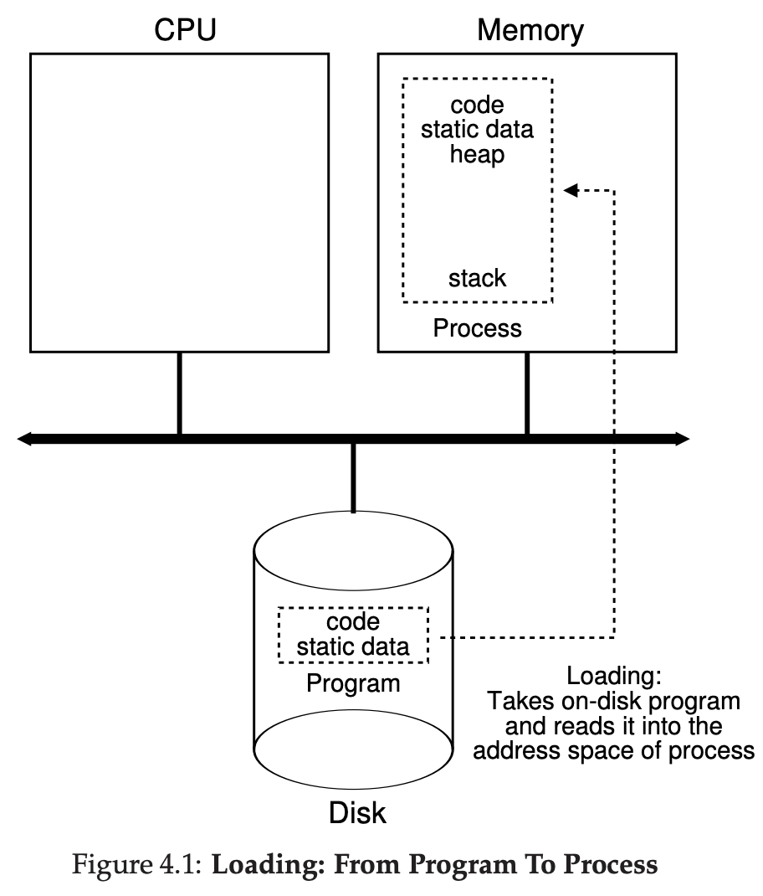
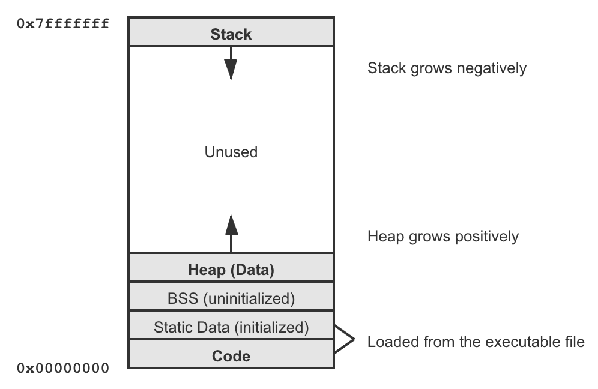
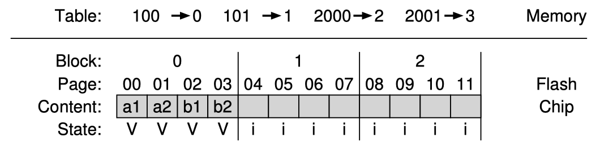
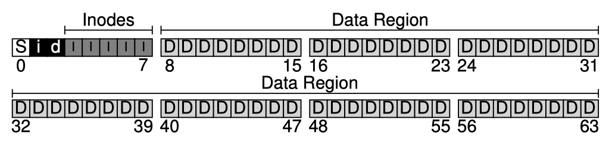

Operating Systems
Operating Systems
Author: Guanzhou (Jose) Hu 胡冠洲 @ UW-Madison
This note is a reading note of the book: Operating Systems: Three Easy Pieces (OSTEP) v1.01 by Prof. Remzi Arpaci-Dusseau and Prof. Andrea Arpaci-Dusseau. Figures included in this note are from this book unless otherwise stated.
Operating SystemsIntroduction to OSVirtualizing the CPU: Processes & Scheduling Abstraction of ProcessMachine StateProcess StatusProcess Control Block (PCB)Process APIsTime-Sharing of the CPUPrivilege ModesHardware InterruptsContext Switch & SchedulerCPU Scheduling PoliciesBasic PoliciesMulti-Level Feedback Queue (MLFQ)Lottery SchedulingCompletely Fair Scheduler (CFS)Virtualizing the Memory: Memory ManagementAbstraction of Address SpaceAddress Space LayoutMemory APIsAddress Mapping & TranslationBase & BoundHardware/OS ResponsibilitiesSegmentationConcept of PagingLinear Page TablesFree-Space Management PoliciesSplitting & CoalescingBasic PoliciesSegregated ListsBuddy AllocationAdvanced PagingTranslation Lookaside Buffer (TLB)Multi-Level Page TablesConcept of SwappingPage Replacement PoliciesCaching EverywhereMemory HierarchyExamples of CachingConcurrency: Multi-Tasking & SynchronizationAbstraction of ThreadMulti-Threaded Address SpaceThread Control Block (TCB)Thread APIsSynchronizationRace ConditionsAtomicity & Mutex LocksOrdering & Condition VariablesSemaphoresImplementing LocksControlling InterruptsHardware Atomic InstructionsSpinning vs. BlockingAdvanced ConcurrencyLock-Optimized Data StructuresConcurrency BugsEvent-Based ModelMulti-CPU SchedulingPersistence: Storage Devices & File SystemsGeneral Input/Output (I/O)Polling v.s InterruptsDirect Memory Access (DMA)OS Software StackStorage DevicesHard Disk Drives (HDD)HDD Scheduling PoliciesRAID ArraysSolid-State Drives (SSD)Abstraction of FilesFiles & DirectoriesFile System (FS) APIsFile System ImplementationVSFS Data StructuresVSFS Access PathsUNIX Fast FS (FFS)Crash ConsistencyCrash ScenariosFile System Checker (FSCK)Journaling (Write-Ahead Logging)More on Storage SystemsLog-Structured FS (LFS)Access ControlDisk Data IntegrityAdvanced/Related Topics
Introduction to OS
An Operating System (OS) is a body of software sitting in between software applications and a Von Neumann computer architecture. An OS connects applications to physical hardware. It makes abstractions of the underlying hardware and provides an easy-to-use interface for running portable software on physical hardware.
Abstraction is a great idea in both computer architecture and operating systems. It hides implementation complexity about the underlying layer and exposes a unified model of how to use the underlying layer to the upper layer. Check out the first section of this note.
In the layers of abstractions, we call the operations supported by the lower-layer as mechanisms, and the algorithms/decisions made by the higher-layer on how to use the mechanisms to achieve a goal as policies (or disciplines).
An OS provides support in at least these three general aspects:
- Virtualization: taking a possibly limited physical resource (processor, memory, storage, ...) and transforms it into a more general, portable, and easy-to-use virtual interface for user applications to use
- Concurrency: acting as a resource manager which supports multiple user applications (and multiple tasks inside one application) to run concurrently and coordinates among running entities, ensuring correct, fair, and efficient sharing of resources
- Persistence: data can be easily lost on volatile devices such as DRAM. An OS allows users to talk to external devices - including persistent storage drives - through Input/Output (I/O)
A modern operating system also pursues some other goals apart from the above stated. They are:
- Performance: minimize the overheads brought by the OS
- Scalability: with multiprocessors, speed up concurrent accesses
- Security: protect against bad behavior; provide isolation
- Reliability: properly recover on fail-stops
- Connectivity: networking support; connect with the Internet
- Energy-efficiency, Mobility, ...
Generally, the most essential part of an OS is the kernel, which is the collection of code that implements the above-mentioned core functionalities. The kernel is typically a piece of static code (hence not a dynamic running entity). A monolithic OS consists of the kernel and some upper-level system applications that provide a more friendly UI. The OS field also covers part of the hardware architecture and external devices.
Virtualizing the CPU: Processes & Scheduling
One of the most important abstractions an OS provides is the process: a running instance of a program. We typically want to run many processes at the same time (e.g., a desktop environment, several browser windows, a music player, etc.), more than the number of available CPU cores. The OS must be able to virtualize a physical resource and let multiple processes share the limited resource. This section focuses on sharing the CPU, which is the most fundamental resource required to kick off any process.
Abstraction of Process
A process is simply an instance (the dynamic instance, doing actual work) of a piece of program (the static code + data, residing on persistent storage) running in the system. There can be multiple processes executing the same piece of program code. Each process represents a somewhat isolated entity.
Machine State
Running a process instance of a program requires the OS to remember the machine state of the process, which typically consists of the following information:
Address space: memory space that a process can address, typically also virtualized, which contains at least:
- Code: compiled machine code of the program
- Data: any initial static data/space the program needs
- Stack: space reserved for the run-time function stack of the process
- Heap: space reserved for any new run-time data
Registers context: CPU registers' values; particularly special ones include:
- Program counter (PC, or instruction pointer): which instruction of the program to execute next
- Stack pointer (SP) & Frame pointer (FP): for managing the function stack
I/O information: states related to storage or network, for example:
- List of currently open files (say in the form of file descriptors)
Process Status
A process can be in one of the following states at any given time:
- (optional) Initial: being created and hasn't finished initialization yet
- Ready: is ready to be scheduled onto a CPU to run, but not scheduled at this moment
- Running: scheduled on a CPU and executing instructions
- Blocked: waiting for some event to happen, e.g., waiting for disk I/O completion or waiting for another process to finish, hence not ready to be scheduled at this moment
- (optional) Terminated: has exited/been killed but its information data structures have not been cleaned up yet
Process Control Block (PCB)
The OS must have some data structures to hold the information of each process. We call the metadata structure of a process the process control block (PCB, or process descriptor). This structure must include the machine state of the process, the status of the process, and any other necessary information related to the process. For example, the xv6 OS has the following PCB struct:
xstruct context { int eip; int esp; int ebx; int ecx; int edx; int esi; int edi; int ebp;};enum proc_state { UNUSED, EMBRYO, SLEEPING, RUNNABLE, RUNNING, ZOMBIE };/** The PCB structure. */struct proc { char *mem; // Start of process memory uint sz; // Size of process memory char *kstack; // Bottom of kernel stack enum proc_state state; // Process state int pid; // Process ID struct proc *parent; // Parent process void *chan; // If !zero, sleeping on chan int killed; // If !zero, has been killed struct file *ofile[NOFILE]; // Open files struct inode *cwd; // Current directory struct context context; // Register values context struct trapframe *tf; // Trap frame of current interrupt};The collection of PCBs is the process list (or task list), the first essential data structure we meet in an OS. It can be implemented as just a fixed-sized array of PCB slots as in xv6, but can also take other forms such as a linked list or a hash table.
Process APIs
These interfaces are available on any modern OS to enable processes:
create- initialize the above mentioned states, load the program from persistent storage in some executable format, and get the process running at the entry point of its code; the process then runs until completion and exits (, or possibly runs indefinitely)
destroy- forcefully destroy (kill, halt) a process in the middle of its executionwait- let a process wait for the termination of another processstatus- retrieve the status information of a processother control signals like suspending & resuming, ...
Application programming interface (API) means the set of interfaces a lower-layer system/library provides to upper-layer programs. The APIs that an OS provides to user programs are called system calls (syscalls). Everything a user program wants to do that might require system-level privileges, such as creating processes, accessing shared resources, and communicating with other processes, are typically done through invoking system calls.
In UNIX systems, process creation is done through a pair of fork() + exec() syscalls.
Initialization of a process is done through
fork()ing an existing process: creating an exact duplicate- The original process is the parent process and the created duplicate becomes one of its child process; a process can have multiple children processes
- There is a special
initprocess created by the OS at the end of the booting process, and several basic user processes, e.g., the command-line shell or the desktop GUI, are forked from theinitprocesses. They then fork other processes (e.g., when the user opens a calculator from the shell), forming a tree of processes
Executable loading is done through
exec()ing an executable file: replace the code and data section with that executable and start executing it from its entry
Copying over the entire state of a process when forking it could be very expensive. A general technique called copy-on-write (COW) can be applied. Upon forking, the system does not produce a duplicate of most of the states (more specifically, most pages in its address space). A page is copied over when the new process attempts to modify that page.
See Chapter 5, Figure 5.3 of the book for a fork+exec+wait example, Section 5.4 for an introduction to UNIX shell terminologies, and Section 5.5. for control signals handling.
Time-Sharing of the CPU
To virtualize the CPU and coordinate multiple processes, the virtualization must be both performant (no excessive overhead) and controlled (OS controls which one runs at which time; bad processes cannot simply run forever and take over the machine). OS balances these two goals with the following two techniques:
- (Limited) Direct Execution (LDE): just run the user program directly on the CPU; OS is not simulating processor hardware; but the OS must be able to re-gain control in some way to do the coordination
- Time-Sharing (Multiprogramming): divide time into small slots, schedule a process to run for a few slots and switch to another one, constantly switching back and forth among ready processes
The OS needs to solve several problems to enable the combination of these two techniques.
Privilege Modes
If we just let a process run all possible instructions directly, it will have dominant control over the machine. Hence, the processor lists a set of sensitive instructions as privileged instructions, which can only be run in high privilege mode. A user process normally runs in user mode, with restricted permissions. When it invokes a syscall (mentioned in the section above), it switches to kernel mode to execute the registered syscall handler containing privileged instructions. After the handler has done its work, it returns the process back to user mode.
Examples of privileged instructions in x86 (can only be called in "ring-0" mode, as opposed least-privileged "ring-3" mode) include:
HALT- stop execution- I/O port instructions
- Turning off interrupts
- ...
The switching between modes is enabled through a mechanism called trap. The special trap instruction simultaneously jumps into somewhere in kernel mode (identified by a trap number) and raises the privilege level to kernel mode. This also includes changing the stack pointer to the kernel stack reserved for this process, and saving the process's user registers into the kernel stack.
To let the hardware know where is the corresponding handler code for a given trap number, the OS registers the address of a trap table: trap no. trap handler addresses into a special hardware register. This trapping mechanism provides protection since a user process cannot do arbitrary system-level actions, but rather must request a particular action via a number.
Trapping into kernel from software through a syscall is sometimes called a software interrupt.
We often use trap to name an active syscall made by the program. We use exception (or fault) to name a passive fall-through into kernel if the program misbehaves (e.g., tries to directly call a privileged instruction) or encounters an error (e.g., runs out-of-memory, OOM).
Hardware Interrupts
Another big issue is that the OS must be able to re-gain control in the middle of the user-level execution of a process, and achieve a switch between processes. We need help from a special hardware component - the timer.
A process can trap/fault into kernel, so does a hardware device. The behavior of a hardware device sending a signal to the processor to pause it current user code execution and to run a specified handler is called an interrupt. The handler is often called an interrupt service routine (ISR). Similar to traps, there is an interrupt table from interrupting device no. interrupt handler addresses (sometimes the software trap table is just embedded in the interrupt table).
One particularly important type of interrupt is the timer interrupt, issued by the timer every configured interval (e.g., 10ms). The ISR for timer interrupt is the place where the OS re-gains control on deciding which process to schedule for the next time slot.
Examples of other hardware interrupts include:
- Keystroke of a specific key from a keyboard device
- Mouse movement/click; other peripheral devices
- ...
Interrupts need to be disabled (meaning not obeying incoming interrupts) during the handling of a trap/interrupt, so that every interrupt is handled to its completion. Also see double fault and triple fault if interested.
Context Switch & Scheduler
We have defined the context of a process as the set of important registers values. Switching from process A to process B is a context switch procedure:
- Save the current registers values (the context of A) into A's PCB
- Restore the saved register values (the context) of B from B's PCB
- Jump to where B was left off - most likely B is in its kernel stack right after the switch, because the last time B was scheduled out, it must be in the scheduler routine
The timer interrupt ISR typically calls the scheduler: a routine that chooses which process to run for the next time slot, possibly using its knowledge of what were scheduled in the history, based on a scheduling policy. It then performs a context switch to switch to the target process. The entire picture looks like:
Note the difference between user registers (those at user-level execution of the program) and kernel registers (those actually stored in the context). At a timer interrupt, the user registers are already stored into the process's kernel stack and the registers have been switched to the set for kernel execution (PC pointing to the handler code, SP pointing to kernel stack, etc.). Hence, the context saved for a process is actually the set of its kernel registers, and the user registers are recovered by the "return-from-trap" operation - this is when the process returns back to user mode.
Context switch is not free and there is observable overhead (saving/restoring registers, making caches/TLBs/branch predictors cold, etc.). We should not ignore this overhead when developing scheduling policies.
CPU Scheduling Policies
With the trap/interrupt mechanism and the context switch mechanism in hand, it is now time to develop scheduling policies for the scheduler to decide which process runs next. Determining the workload - here the processes running in the system and their characteristics - is critical to building policies. A policy can be more find-tuned if we know more about the workload.
Basic Policies
Let's first (unrealistically) assume that our workloads are:
- All jobs only use the CPU (so a single resource w/o blocking) and perform no I/O
- The run-time of each job is known
We look at these metrics to compare across policies:
- Turnaround time for each job, then averaged over jobs; if with the assumption of "jobs arrive at the same time", will be 0 for everyone
- Response time for each job; it measures how "promptive" an interactive job (say the shell) would be
- Fairness: we often need to tradeoff between turnaround time and fairness
Some basic, classic policies are:
First-In-First-Out (FIFO, or First-Come-First-Serve, FCFS)
FIFO is intuitive but can often leads to the convoy effect: where a number of relatively short jobs get queued after a long job, yielding poor overall turnaround time. FIFO may work well in some cases such as caching, but not for CPU scheduling.
Shortest-Job-First (SJF)
SJF is optimal on turnaround time if all jobs arrive at the same time, each job runs until completion, and their durations are known; however, in reality, this is rarely the case, and suppose A comes a little bit earlier than B & C in the above example, it encounters the same problem as in FIFO.
Shortest-Time-to-Completion-First (STCF, or Preemptive-Shortest-Job-First, PSJF)
STCF is a preemptive policy - it can preempt a job in the middle if another one with shorter TtoC arrives. (Accordingly, FIFO and SJF schedulers are non-preemptive.) STCF is optimal given our current assumption and the turnaround time metric.
Round-Robin (RR)
Above-mentioned policies are not really taking advantage of the time-sharing mechanisms. RR divides time into small slots (scheduling quantum) and then switches to the next job in the run queue in a determined order. RR is a time-slicing scheduling policy. The time slice length should be chosen carefully: short enough to be responsive, and long enough to amortize the cost of context switches.
RR is quite fair and responsive, but one of the worst on turnaround time. With RR, we can also take I/O into consideration: when job A blocks itself on doing a disk I/O, the scheduler schedules B for the next slot, overlapping these two jobs.
Multi-Level Feedback Queue (MLFQ)
The biggest problem of the above basic policies is that they assume job durations are known beforehand (priori knowledge). However, this is hardly true in any real systems. Good scheduling policies tend to learn something from jobs' past behavior (history) and make decisions accordingly. One of the best-known approaches is Multi-Level Feedback Queue (MLFQ). It tries to trade-off between optimizing turnaround time and minimizing response time. In other words, it well mixes interactive or I/O-intensive jobs with long-running CPU-intensive jobs.
MLFQ has a number of distinct queues, each assigned a different priority level. A job is in a single queue at any given time.
- If , i.e., A is in a higher level than B, A runs;
- If , i.e., for jobs in the same level, they run in RR.
The key lies in how MLFQ dynamically sets priorities for jobs. MLFQ first assumes that a job might be short-running & interactive, hence giving it highest priority. Then, every time it runs till the end of a time slice without blocking itself on e.g. I/O, we reduce its priority level by 1, moving it to the queue one level down.
- When a job enters, it is placed at the highest priority (the topmost queue);
- If a job uses up an entire time slice without relinquishing the CPU, it moves down one queue;
- If a job gives up the CPU before the time slice is up, it stays in the same priority level queue.
There are still a few problems. There might be starvation if there are quite a few interactive jobs that a long-running job might have no chance to run. A program could game the scheduler by issuing an I/O at the very end of every time slice. The behavior of a job might also change over time. Hence, we add several rules:
- Priority boost: after some time period , move all the jobs in the system to the topmost queue;
- Gaming tolerance: once a job uses up its time allotment at a given level (regardless of how many times it has given up the CPU), it moves down one queue.
Smarter MLFQ implementations tune these parameters instead of setting them as a default constant: adjusting #priority levels (#queues), lower levels have longer time slice quanta, using math formula (e.g., decaying) to calculate quanta and allotment, etc. OS implementations, such as FreeBSD, Solaris, and Windows NT, use some form of MLFQ as the base scheduler.
Lottery Scheduling
We also examine a different type of scheduler known as fair-share scheduler. Instead of minimizing turnaround time, it tries to guarantee that each job obtain a certain percentage of CPU time - a proportional share. Lottery Scheduling is a good example of such scheduler, see the paper.
Lottery scheduling assigns each job a number of tickets. At each scheduling decision point, it uses randomness to decide who wins the next slot. Say A has 75 tickets, B has 25, and C has 100, so the total amount of tickets is 200. The systems picks a random number between 0~199 and walks a running sum: if 75 > num, A wins, else if 75+25=100 > num > 75, B wins, otherwise C wins.
There are a few extra ticket mechanisms that might be useful:
- Ticket currency: a group/user can allocate tickets among their own child jobs in whatever scale - they form a hierarchy of currencies and the eventual proportions are multiplied (Figure 3 of the paper)
- Ticket transfer: a process can temporarily transfer tickets to another process to boost its share, e.g., when a client sends a request to a server process and wants it to finish the request quickly
- Ticket inflation: in a cooperative (trusted) scenario, a process can simply inflate its number of tickets to reflect the need of more CPU share, without even communicating with any shared state in kernel
Stride scheduling avoids using randomness but instead divides the #tickets by a large number to get the stride value of each process. Whenever a process finishes a slot, increment its pass value by its stride. Pick the process with smallest pass value to run next. The strength of lottery scheduling (using randomness) is that it does not need any global state.
Completely Fair Scheduler (CFS)
Linux adopts a scalable, weighted-RR, fair-share scheduler named the Completely Fair Scheduler (CFS), see here. It tries to be efficient and scalable by spending very little time making scheduling decisions. CFS accounts virtual runtime (vruntime) for every job.
Each job's
vruntimeincreases at the same rate with physical time; always pick the process with the lowestvruntime;Parameter
sched_latency(e.g., 48ms) decides the length of a whole round; CFS divides this value by the number of processes to determine the time slice length for each process;CFS never assigns time slice lengths shorter than parameter
min_granularity, so it won't go wrong if there are too many processes;Each process has a nice value from -20 to +19, positive niceness implies lower priority (so smaller weight); there is a mapping from niceness to weight value (in a log-scale manner, just like the dB unit of loudness); CFS then weights time slices across processes:
CFS uses a red-black tree to keep track of all ready processes for efficiency. When a process goes to sleep, it is removed from the tree. CFS also has many advanced features including heuristics and scheduling across groups and multiple CPUs.
Virtualizing the Memory: Memory Management
Apart from virtualizing the CPU, an OS must also be able to enable sharing of another important resource across processes - the memory. Processes require memory space to hold all of their runtime data, and it would be way too slow if we save/restore the entire memory content upon every context switch, especially when we are time-sharing the CPU (frequent switches). Hence, the OS must be able to do space-sharing of the memory: put all processes' in-memory data in the physical memory, and somehow let a process know how to address a byte it wants. Upon a context switch, we just switch the registers so that they point to correct addresses for the switched process. The OS must provide protection, efficiency in addressing, and a way to handle insufficient space if the physical memory is running out.
Abstraction of Address Space
To enable the space-sharing of memory, we again turn to virtualization. We give each process an illusion of the ability to address across its own memory space, which could be huge and sparse. This abstraction is called the address space of the process - it is the running program's view of memory (virtual memory, VM) and is completely decoupled with what the DRAM chip actually provides (physical memory). A program uses virtual address to locate any byte in its address space.
Address Space Layout
An OS must give a clear definition of the address space layout it expects. Conventionally, an address space contains the following segments and is structured in the following way:
- Code: the program's machine code (the instruction); PC always points to somewhere in this segment
- Static data: holding global static data, could be further separated into initialized region (so read-only) and uninitialized region (so writes allowed)
- Stack: the function call stack of the program to keep track of where it is in the call chain; function calls form a stack of frames, where the local variables of a function resides in its frame; SP & FP always point to somewhere in this segment; stack grows negatively
- Heap (data): for dynamically allocating runtime, user-managed memory (e.g., when calling
malloc()); heap grows positively - (optional) OS kernel mapped: the kernel could also be mapped into every process's address space (probably into the higher half), and is thus shared across processes

In reality, size of the virtual address space typically depends on the number of bits the hardware platform uses for addressing. If the hardware operates on 32-bit numbers, we could use an entire range from 0x00000000 to 0xffffffff. The virtual address space could be very huge in size and very sparse (mostly empty) - this is not a problem. It is just the process's view on memory but we are not putting this space directly on physical memory at address 0. The OS will have some way to map the occupied bytes in the address spaces of all processes onto physical memory, which we will talk about in the next section.
This layout is just a convention for single-threaded processes. There could be other arrangements and things could be more complicated when a process becomes multi-threaded, which we will talk about in the concurrency section.
Memory APIs
These are the interfaces in C programming on UNIX systems for user programs to allocate memory. Other platforms might have different interfaces but they share the same spirit.
Implicit (automatic) allocation of function call stack memory, containing local variables & local data
Explicit, dynamic allocation of heap memory for large or long-lived, dynamic-size data
brk(),sbrk()- the primitive syscalls for changing (enlarging or shrinking) the heap data segment end-point bound; since memory allocation is tricky, user programs should never call these syscalls directly, but should rather use the library functions described belowmalloc(),calloc(),realloc(),free()- normally, C programs link against a standard library which contains higher-level routines (wrapping over thebrksyscalls) for allocating heap memory regions; these are not syscalls but are library functions with sophisticated allocation policies (using the syscalls as mechanism)mmap(),munmap()- create/unmap a memory region for mapping a file or a device into the address space, often in a lazy manner, as an alternative I/O mechanism
With the malloc() + free() interface, here is a list of common memory errors in C programming:
- Forgetting to allocate memory and using an uninitialized pointer variable (wild pointer)
- Not allocating enough memory (buffer overflow)
- Not initializing allocated memory to known state (uninitialized read)
- Forgetting to free memory (memory leak)
- Accessing memory after it's freed (dangling pointer)
- Freeing memory repeatedly (double free)
- Freeing incorrect memory addresses
They often lead to the infamous segmentation fault (SEGFAULT) which happens when accessing a memory address the process shouldn't touch. Beware that code compiles & runs no segfault does not mean it runs semantically correctly - you could be accessing incorrect (but valid) memory addresses, which is still a serious bug.
Address Mapping & Translation
Every address a user program sees is virtual. The OS makes the virtual memory system transparent to users and implicitly translates any address a process asks for into physical memory. This is the procedure of (hardware-based) address translation and it implicitly implies the address mapping scheme the OS adopts. Here we list three address mapping and translation schemes. For efficiency, the OS makes use of hardware support (from a few register to full page table support) instead of simulating everything in software.
The idea of interposition is really powerful and essential in systems. When virtualizing the CPU, the hardware timer sends timer interrupts to interpose the execution of a process to let the OS re-gain control periodically; this enables transparent time-sharing of the CPU. When virtualizing the memory, the hardware MMU interposes on each memory access to perform address translation; this enables transparent space-sharing of the memory.
We will discuss three address translation schemes, along with some complementory knowledge:
- Base & Bound
- Segmentation
- Paging
Base & Bound
Let's first assume that the address spaces are small and compact, so it can fit in physical memory contiguously. With this assumption, the most intuitive way of address mapping is to simply relocate the address space to start at some offset in physical memory. The base & bound method (BB, or dynamic relocation, or hardware-based relocation) makes use of two hardware registers:
- Base register: the starting offset the OS decides to put the current process's address space at
- Bound register: the size (limit) of the current process's address space
Upon a context switch to a process, the two registers get loaded the base & bound values for this process. This step requires OS intervention to decide where to relocate (where is base). Along its execution, upon any memory access, the address translation is done by the hardware directly. This part of hardware (doing address translations) is often named the memory management unit (MMU).
The MMU algorithm for base & bound is obviously simple:
if virtual_addr >= bound: raise out-of-bound exceptionelse: physical_addr = virtual_addr + baseWithout hardware support, purely software-based relocation is not so great. We could let a loader scan through the machine code of the executable file and change add a base value to every address it sees at process loading. However, this approach lacks protection and is not flexible.
Hardware/OS Responsibilities
A brief summary of hardware support we have talked about so far:
- Two privilege modes - OS code runs in privileged kernel mode and user program runs in user mode
- MMU registers, specifications, and the translation algorithm
- Privileged instructions only to be executed in kernel mode (e.g., updating base/bound)
- Privileged instructions to register trap/exception handlers
- Ability to raise hardware exception upon invalid memory access, ...
And the OS must take these responsibilities for virtual memory to work:
- Free space management: finding free space for new processes and reclaiming memory back at termination, via some sort of free-list data structures
- Upon context switch: setting proper MMU register states (e.g., base & bound values)
- Exception handling: decide what to do upon memory access exceptions the hardware reports, probably terminating the offending process or handling the fault if that is an innocent fault
Segmentation
The base & bound approach has an obvious drawback: it requires that the physical memory has a big, contiguous chunk of empty space to hold the address space of a process. However, our address space could be huge and sparse, so it might not fit in as a whole. And all the unused bytes are still mapped, wasting a lot of memory space. Segmentation is a generalized form of base & bound which eases this problem.
A segment is a a contiguous portion of the address space. We could break the code, stack, & heap into three segments, then for each of them, apply base & bound independently. This way, only used memory is allocated space in physical memory.
One problem thus arise: given a virtual address, how does the hardware know which segment it is referring to (so that it can do the base & bound check)? There are two approaches:
Explicit: we chop the address space into fixed-sized segments, so that the highest several bits of a virtual address is the segment ID and the remaining bits is the offset in the segment (as we will see soon, this is an early form of paging)
The MMU algorithm thus goes:
segment_id = virtual_addr >> SEG_SHIFToffset = virtual_addr & OFFSET_MASKif offset >= bounds[segment_id]:raise out-of-bound exceptionelse:physical_addr = offset + bases[segment_id]Implicit: the hardware detects how an address value is derived, and determines the segment accordingly (e.g., if an address value is computed by adding something to PC, it should be referring to the code segment)
Some extra support from hardware could be added:
- Negative-growth bit for stack: since stack grows negatively, this bit indicates offset should be calculated into a negative value
- Protection (permission mode) bits for sharing: some systems support sharing segments across processes (e.g., if code is the same, could share the code segment with
read-execpermission)
Concept of Paging
Chopping things into variable-sized segments can make free-space management very challenging. Most modern OSes take a more generalized approach of explicit segmentation called paging: chopping the address space into fixed-sized, relatively small pieces, in size of say 4KB. Each of such pieces is called a page (or virtual page). Physical memory is also chopped into pieces of the same size. To allocate space for a page, the OS allocates a physical frame (or physical page) to hold the page.
Paging offers these advantages over previous approaches:
- Flexibility: no assumptions on how the address space layout is defined; we just map in-use pages to frames; for example, the heap can grow arbitrarily non-contiguously if we want
- Simplicity: pages are in fixed size, so the allocation and tracking of free frames will be much easier
The OS must maintain a per-process data structure to record the current mapping from pages to their allocated physical frames. This data structure is called the page table. A page table is essentially a mapping table from virtual page number (VPN) to physical frame number (PFN, or PPN). Assume page size is a power of 2:
Any virtual address can be split into two components: VPN of the page & offset in the page
- #bits for offset
- #bits for VPN #bits per address #bits for offset
// Say page size is 16 bytes, and a virtual address is 6 bits// -> Within a page, we need 4 bits to index a byte// -> Offset is the least significant 4 bits// (where am I in the page?)// -> VPN is the most significant 2 bits// (which page?)0b 01 0101 // example virtual address in binary// |--||----|// VPN offsetAddress translation is now the process of translating VPN into PFN, and offset stays the same:
The size of DRAM on the machine determines the number of physical frames available, which in turn determines how many bits we need for PFN. Just like in segmentation, multiple processes could share a same physical frame (possibly as different virtual page addresses), one good example being sharing a common code page.
Linear Page Tables
Due to efficiency issues, dynamic data structures like linked lists or hash tables are generally out of concern for implementing a page table. Let's first consider the simplest form of a linear (flat) page table: a one-level array of page table entries (PTE). The OS indexes the array by VPN, and each PTE holds the PFN for that VPN and a few necessary control bits:
- Valid bit (
V): whether this VPN is in-use (mapped) or unused; if a translation finds an invalid PTE (valid bit unset), it means the process is trying to access a page not mapped yet, and the hardware raises the famous exception named page fault to trap into OS kernel, which then decides how to deal with this access. The OS could check the faulty address and decide whether to allocate memory for the new page or just terminate the process - Present bit (
P): this relates to swapping, which we will talk about in the advanced paging section; present bit unset (but valid bit set) means the page is mapped but currently swapped out of memory to disk; (our x86 example only has present bit but no valid bit, because it triggers a page fault as long as page is not present, and leaves the OS to keep track of whether the page is swapped out or is simply not valid) - Protection bits (
R/W, etc.): indicate whether the page is readable, writable, and/or executable; for example, modifying a read-only page will trigger an exception to trap to the OS - Dirty bit (
D): if page is writable, has it been modified since brought to memory (useful for page replacement in swapping or when caching mmap'ed files) - Reference bit (
R), or Access bit (A): used to track whether a page has been accessed (useful for helping page replacement in swapping)
The page table in this form can be incredibly large (e.g., 4MB page table per 32-bit process address space) and cannot fit in hardware MMU. Thus, the page tables themselves are stored in memory, specifically somewhere in kernel-reserved memory. Hardware MMU just keeps a page-table base register (PTBR) to record a pointer to start of the current process's page table, and upon a translation, go to that location on memory. The MMU algorithm goes:
VPN = virtual_addr >> ADDR_PN_SHIFToffset = virtual_addr & ADDR_OFFSET_MASKPTE_addr = PTBR_reg + (VPN * sizeof(PTE))PTE_content = *PTE_addr # goes to memory (or hits TLB)if any_control_bit_violation: raise page-fault or permission exceptionelse: PFN = PTE_content >> PTE_PFN_SHIFT physical_addr = (PFN << ADDR_PN_SHIFT) | offsetWe will talk about useful techniques on saving space and speed up translations in the advanced paging section.
Free-Space Management Policies
In the above sections, we haven't really answered this question: how does the OS find proper free space when it needs to enlarge/allocate something? How to manage free space efficiently? We use the name fragmentation to describe the situation where there is space wasted in an address mapping scheme.
- Internal fragmentation: unused bytes in the address space getting mapped
- External fragmentation: small free spaces being left over between two mapped regions, which can hardly be used to map something else; there is no single contiguous free chunk, though the total number of free bytes is enough
Different address translation schemes have different behaviors with regard to the two types of fragmentation. Fragmentation is hard to eliminate completely, but we can try to do better.
- Base & bound has both serious external fragmentation and internal fragmentation
- Segmentation has no internal fragmentation, but has external fragmentation (if w/o periodic garbage collection/compaction, useful but very expensive operations)
- Paging has no external fragmentation, but has a little bit of internal fragmentation (worse with larger page size)
Note that the problem of free-space management is generic. It applies to how a malloc() library allocates new bytes on heap, how an OS allocates physical memory for new segments, etc. Here we list a few classic free-space management policies.
Splitting & Coalescing
Suppose we keep a free list data structure as a linked list of free spaces. Two mechanisms play a significant role in all allocator policies:
Splitting: when a small request comes, split an existing large chunk, return the requested size and keep the remaining chunk
Coalescing: when a piece of memory is freed and there is free chunk next to it, merge them into one big free chunk
Basic Policies
These are the most basic, intuitive policies for memory allocation:
Best-Fit: search through the free list and find the smallest free chunk that is big enough for a request (possibly with splitting)
- Advantage: intuitive, nearly optimal
- Disadvantage: expensive to do exhaustive search
Worst-Fit: find the largest chunk, split and return the requested amount, keep the remaining chunk
- Advantage: if using a max-heap, finding the largest chunk could be fast
- Disadvantage: performs badly, leading to excess fragmentation
First-Fit: find the first block that is big enough, split and return the request amount
- Advantage: fast, stops early
- Disadvantage: tends to pollute the beginning of the free list with small objects; address-based ordering could help
Next-Fit: just like first-fit, but instead of always starting from the beginning, maintains a pointer to remember where it was looking last; start the search from there
- Advantage: same efficiency advantage as first-fit
- Disadvantage: requires keeping an extra state
There is hardly any perfect free space allocation policy in general, because we could always construct a worst-case input of requests (adversarial input) to mess it up. We can only compare their pros and cons.
Segregated Lists
If a particular application has one (or a few) popular-sized request it makes, keep a separate list just to manage objects (i.e. free chunks of fixed size) of that size. All other requests are forwarded to a general memory allocator, say running one of the above policies. The slab allocator (see here) used in Solaris and Linux kernel is one such example.
- When the kernel boots up, allocate a number of object caches for possibly-popular kernel objects, e.g., locks, inodes, etc.
- When a given cache is running low on free space, itself requests some slabs of memory from a general allocator, the amount being a multiple of its object's size
- When a given cache is going empty, it releases some of the spaces back to the general allocator
Objects in the cache can also be pre-initialized so that the time for initialization and destruction at run time is saved.
Buddy Allocation
The binary buddy allocator (see here) is designed around splitting & coalescing in sizes of 2, allowing some internal fragmentation but making the coalescing procedure much more efficient.
- In the beginning, the allocator holds a one big space of size 2
- When a request comes, the search for free space recursively divides free space by 2, until the smallest power of 2 that is big enough for the request is found
- When that block is freed, the allocator checks if its buddy block (the one produced by the last split, its sibling block) is free; if so, it coalesces the two blocks; this procedure repeats recursively up the tree until the top of the tree is reached, or until a level where the buddy is in use
We are particularly interested in binary buddy allocation, because it fits the binary address representation on most architectures so well. The address for a block differs with the address of its buddy block in just one bit (which bit depends on its level), so we can have highly-efficient implementations using bit-wise operations. Of course, there could be higher-order buddy allocation.
For scalability issues on multiprocessors, concurrent data structures are being used in modern memory allocators to speed up concurrent accesses on the free list and to reduce the steps for synchronization. We will touch these in the concurrency section.
Advanced Paging
We have talked about basic paging with linear page tables, but they are not very efficient. It requires extra memory read for every memory access (notice that fetching an instruction is also a memory access), which almost doubles the latency penalty. The page tables take up a lot of space, but most pages in an address space are probably unused. We now talk about techniques to optimize paging.
Translation Lookaside Buffer (TLB)
A translation lookaside buffer (TLB) is a cache for address translation - it is part of the hardware MMU for storing several popular PTE entries with fast access speed (e.g., in SRAM instead of DRAM). Like all caches, it assumes that there is locality in page accesses (code instructions tend to be sequentially executed, etc.), so there tend to be popular pages at a given time.
At a context switch to a new process, if we do not have an address-space ID (ASID) field in TLB entries, the TLB must be flushed (i.e., emptied, all invalidated)
Upon an address translation, the MMU checks if the TLB holds the translation for this VPN (and ASID matches):
If yes, it is a TLB hit, and we just extract the PFN from the relevant TLB entry
If no, it is a TLB miss, and we have to go to the page table on memory to perform the translation
- After getting the PFN for a TLB miss, we need to decide whether to put the translation for this VPN into TLB; if so and if the TLB was full, it triggers a replacement, and we need to choose a victim entry to replace
Since memory accesses are so common, page lookups happen so frequently, thus we would like to minimize the chance of TLB misses as much as possible (i.e., maximizing the hit rate). Also, one problem remains as who should handle TLB misses.
- Hardware-managed TLB: old hardware architectures handle TLB misses entirely in hardware; hence, they need to strictly define the page table format they expect
- Software-managed TLB: with the impact of RISC architectures, modern architectures raise a fault and trap into OS kernel to let the OS decide how to handle a TLB miss; this allows the OS to define its own page table structures more flexibly, but we must be careful not to let the execution of the trap handler cause chained (cascading) TLB misses, by e.g. keeping the trap handler always accessible bypassing the TLB, or reserve some wired TLB entries for the handler
Multi-Level Page Tables
Now we focus on making the page tables smaller. The main observation is that most of the pages in a sparse address space are unmapped, yet they still take up a PTE slot. To ease this issue, we use multi-level page tables: breaking the page table into multiple levels of indirection. Suppose we use two levels:
- The top level is often called a page directory: it is still an array, but in a coarser granularity; it is indexed using the higher bits of VPN, and instead of recording PFNs, they record pointers to sub-level page tables; each entry in the top-level, here could call them page directory entries (PDE), represent a subarray of a linear page table
- The leaf level is a sub-table indexed using the lower bits of VPN; they store actual PFNs
- To fit better in memory, every table (at any level) itself takes up the space of a page; so the number of branches per level page size size of PTE; when a sub-table turns active, the OS just need to allocate a page for that
As you can see, if pages in an entire sub-table are unmapped, that sub-table (and it's children) won't be allocated at all, saving a lot of space. The virtual address split and the MMU algorithm goes (looking up a multi-level page table is often called walking a page table):
VPN = virtual_addr >> ADDR_PN_SHIFTPDI = VPN >> VPN_PDI_SHIFTPTI = VPN & VPN_PTI_MASKoffset = virtual_addr & ADDR_OFFSET_MASK# index the page directoriesPD_start = PTBR_regfor levels of page directories: PDE_addr = PD_start + (PDI * sizeof(PDE)) PDE_content = *PDE_addr # goes to memory (or hits TLB) PD_start = (PDE_content >> PDE_PFN_SHIFT) << ADDR_PN_SHIFT# index the leaf-level page tablePT_start = PD_startPTE_addr = PT_start + (PTI * sizeof(PTE))PTE_content = *PTE_addr # goes to memory (or hits TLB)if any_control_bit_violation: raise page-fault or permission exceptionelse: PFN = PTE_content >> PTE_PFN_SHIFT physical_addr = (PFN << ADDR_PN_SHIFT) | offsetTwo factors here require careful tradeoff between page table size and translation latency performance (time-space tradeoff):
- #Levels of page tables: more levels saving more space, but slower translation (more memory accesses)
- Page size: larger pages fewer pages, smaller tables, possibly faster lookups, but worse internal fragmentation; modern systems do support multiple page sizes, and allow smarter applications to ask for using so-called hugepages on demand
A more extreme space-saving technique is to have an inverted page table, which is a global (one) mapping from physical frames to its currently mapped virtual address space & page. Hash tables could be built upon it to enable address translations.
Concept of Swapping
Now let's consider the situation where the physical memory space is running low and we cannot find a free physical frame to put a new page. This is when swapping is needed: writing some pages to persistent storage to free up frames. Swapping is at its essence a caching problem.
The OS takes out a certain region of a block storage device's space (say an HDD) as the swap space. Let's assume that the block device has block size equal the page size of our VM system. A PTE with valid bit set but present bit unset means it is mapped, but currently swapped out to disk. With swapping enabled, the name page fault sometimes narrowly refers to accessing a valid but swapped page, requiring the OS the handle the fault and bring the page back. An example snapshot of system state:
- Page out: moving a page from memory to disk
- Page in: moving a page from disk back to memory
- Page replacement (or eviction in general caching): when we access a swapped page but the memory is nearly full, we first need to choose a victim page to page out, then page in the requested page to that frame
The mechanism of swapping is transparent to user processes, just like almost everything in our VM system. Be aware that, no matter how smart your page replacement policy is, if your workload demands way more memory than the actual physical memory size, paging in/out will happen and they are slow. In this case, the best solution is to buy more memory.
Swapping only at full could be dangerous and could trigger thrashing (or throttling). The OS can have a background process named the swap daemon or page daemon that monitors the free ratio of physical memory. If there are fewer than low watermark (LW) frames free, the daemon starts swapping out pages, until there are high watermark (HW) frames free.
Linux also has an out-of-memory (OOM) killer that kills processes when memory is nearly (but not exactly) full. These are examples of admission control and they help prevent thrashing.
Page Replacement Policies
Accessing a block on a disk is significantly slower than accessing the memory, and is sensitive to sequentiality, thus the page replacement policies must be smart enough to avoid disk reads/writes as much as possible. These policies more generally fit in any caching systems and there are so many of them. Read this wikipedia page and this post if interested.
Optimal (MIN, OPT)
Given perfect knowledge of the workload (memory access pattern), we could derive a theoretically optimal (but quite unpractical) policy that minimizes the miss rate: always replace the page that will be accessed furthest in the future. The optimal hit rate is probably not 100%: you at least have a cold-start miss (compulsory miss). Having an optimal hit rate serves as a good baseline to evaluate other policies.
First-In-First-Out (FIFO)
Simple, intuitive, but generally does not perform well. FIFO suffers from a phenomenon called Belady's Anomaly: enlarging the cache size could possibly make hit rate worse. Policies like LRUs do not suffer from this problem.
Random (RAND)
Simple and works pretty well in some cases. The strongest thing about random is that its does not suffer from any particular adversarial input - there's is no special input sequence guaranteed to trigger horrible performance on random, but there are for any other deterministic policy. The downside is of course its non-determinism (performance instability).
Least-Recently-Used (LRU) and Least-Frequently-Used (LFU)
Do accounting on the recency and/or frequency of page accesses, and choose the least-recently used or least-frequently used page. LRU is the most classic caching algorithm that works well in most cases and is very understandable and intuitive. Its downside is that it does not have scan-resistance: if our working set is just slightly larger than the cache, a scanning workload could trigger a miss for every access. Keeping account of recency/frequency is also expensive.
Second-Chance FIFO and Clock
Second-Chance is an example of efforts on approximating LRU while throwing away the accounting for time/frequency. It works as a FIFO but clears the access bit on a page at the first chance, giving it a second chance. Please see the post for details. Clock is an implementation optimization to Second-Chance to make it even more efficient. Clock algorithm could also be enhanced with dirty bits to prioritized pages that aren't modified (so no need to write back to disk).
Many more advanced caching policies...
Given an average miss rate of , we can calculate the average memory access time (AMAT) for a page as:
, where is the latency of reading from memory and is the latency of reading from disk. Even a tiny bit of increase in builds up AMAT because is generally much larger than .
So far we assumed demand paging (or lazy paging), meaning that we only bring a page to memory the first time it is accessed. Some systems deploy prefetching of nearby pages ahead of time when a page is accessed.
The system also do clustering (or grouping) of write-backs so that a sequence of pages next to each other are evicted in one sequential request to disk, yielding better throughput performance, as we will learn in the persistence section.
Caching Everywhere
We have touched on the important idea of caching several times, a concept that should have been well explained in computer architecture courses. Caching is critical to the performance of modern computer systems.
Memory Hierarchy
In general, on any architecture that forms a memory hierarchy: different levels of storage from faster, smaller, volatile storage to slower, larger, persistent storage, caching brings benefits. The typical memory hierarchy in modern machines has at least the following layers:
- Private L1 & L2 CPU cache
- Shared L3 CPU cache across cores
- On-chip SRAM for TLB, etc.
- DRAM as the main memory
- Persistent memory
- Fast block devices (NVMe SSDs, etc.)
- Data over the network
- Slow block devices (HDDs, etc.)
Caching is based on the observation that data accesses tend to have spatial locality & temporal locality:
- Spatial locality: a data access tends to be followed by accesses to nearby data around it, in some pattern
- Temporal locality: a certain range of data tends to be accessed repeatedly in a period of time, in some pattern
Hence it would be beneficial if we maintain certain hot (popular) pieces of data in a faster, smaller, upper layer while keeping the majority of data in a slower, larger, lower layer of storage.
Examples of Caching
Quite a few concepts covered in this note are just instances of caching:
- CPU cache: fast SRAM over DRAM
- TLB for paging: SRAM over DRAM
- Swapping: DRAM over persistent storage
- File system page cache (block cache): DRAM over persistent storage
- On-disk cache: on-disk DRAM over persistent media
- ...
For caching to work well, a smart (and suitable) policy is a must to maximize hit rate (= minimize miss rate). Caching has been a long line of research and there are tons of caching policies with different characteristics. Please read this post if interested.
See Chapter 23 of the book for a case study on two real-world operating systems' virtual memory management: DEC VAX/VMS and the Linux VM.
Concurrency: Multi-Tasking & Synchronization
This section explores another important aspect of computer systems: concurrency. Concurrency generally means "multiple things going on at the same time". We could also call it multi-tasking. With the support for virtualization, we have already seen how the OS runs multiple processes on a machine with shared CPU cores and memory space, which is one form of concurrency. However, processes generally represent separate entities and the OS tries its best to ensure isolation between processes. Are there alternatives?
Abstraction of Thread
We introduce a new abstraction of a running entity called a thread. For a single process, it could have multiple threads sharing the same address space (hence, the same code, data, etc.). Different threads differentiate with each other mainly in:
- Different PC register values: each thread has its own PC, meaning they can (and probably will) be executing different pieces of code of the program
- Separate stacks and SP: each thread has its own function call stack space (because they will be executing different routines) and the corresponding stack pointer registers, etc.; the function stacks in this case may be called thread-local
We call the action of utilizing multiple threads as multi-threading. A program spawning threads is a multi-threaded program. A default process with just the main thread can be viewed as a single-threaded process. Multi-threading brings at least two benefits:
- Parallelism if we have multiple CPU cores and/or certain excessive resources: multiple threads can run on different cores at the same time; this action is called parallelization
- Multiprogramming: enables overlapping of I/O (or other blocking behaviors) with other activities of the program: when one thread issues an I/O on behalf of the program, other threads can fill this gap and do useful computation on the core
Multi-Threaded Address Space
A multi-threaded process's address space looks like:
The OS and the threading library could have different ways to layout the thread-local stacks.
Thread Control Block (TCB)
Since threads have their own PC and other registers, switching between threads on a CPU core is also a context switch. The difference from process context switches is that thread context switches are more lightweight: just registers, no page table pointer switches, no TLB flushes, no open file state changing, etc.
Apart from the registers context, each thread could have different scheduling properties, e.g., priorities, time-slice lengths, etc. A thread control block (TCB) is the data structure for keeping these states of a thread. TCBs of a process are typically part of the PCB of the process. For example, we could modify our xv6 PCB structure to something like:
struct context { int eip; int esp; int ebx; int ecx; int edx; int esi; int edi; int ebp;};/** The TCB structure. */struct thread { int tid; // Thread ID struct context context; // Register values context struct sched_properties sp; // Scheduling properties};/** The PCB structure. */struct proc { ... struct thread threads[MAX_THREADS]; // TCBs};Thread APIs
The POSIX specification defines a set of pthread APIs:
pthread_create()- create a new thread with attributes and start its execution at the entry of a routine (often called thread function); the creator is the parent thread and the created one is a child thread; thread creations could form a deep tree like in process forkspthread_join()- wait for a specific thread to exit (called joining the thread)pthread_exit()- for a thread to exit itself (returning from thread function implicitly means exit)- Synchronization primitives:
pthread_mutex_*(),pthread_cond_*(), ...
These interfaces are either raw system calls or wrappers provided by a pthread library (should be explicitly linked against) if the OS provides slightly different threading syscalls in the low level.
The portable operating system interface (POSIX) is a set of specifications that define the interfaces an operating system should provide to applications. There can be many different OS designs and implementations, but as long as they comply to a (sub)set of POSIX interfaces, applications can be developed on one POSIX system platform and ported to run on another POSIX platform with ease. Please see the linked wikipedia page for what interfaces the POSIX specification includes and which operating systems are POSIX-compliant.
Synchronization
Threads are powerful because they share the same address space , but such sharing leads to a critical problem: how to prevent race conditions if they operate on shared data and how to express a "waiting-on-something" logic? In general, the term synchronization refers to mechanisms + policies to ensure
- Atomicity of accesses
- Ordering of execution
It applies to any case where there are multiple running entities sharing something, but its exceptionally critical to OSes because the problem of sharing happens so often.
Race Conditions
If we do not apply any restrictions on the scheduling of threads, the result of execution of a multi-threaded program is likely to be indeterministic. Each thread is executing its own stream of instructions, yet every time which one executes its next instruction could be arbitrary. Consider an example where two threads executing the same "plus-one" routine to a shared variable with original value 50:
; increments the variable at addr by 1mov addr, %eaxadd $0x1, %eaxmov %eax, addrYou might expect a correct program to always produce 52 as the result. However, the following sequence could happen and the result could be 51 which is incorrect:
This is what we call a race condition (or, more specifically, a data race): unprotected timing of execution. The result of such a program would be indeterminate: sometimes it produces the correct result but sometimes the results are different and are likely wrong. We call such piece of code a critical section: code routine that accesses a shared resource/data and, if unprotected, might yield incorrect result.
Atomicity & Mutex Locks
What we want is that whenever a thread starts executing a critical section, it executes until the completion of the critical section without anyone else interrupting in the middle to execute any conflicting critical section (executing unrelated code would be fine). In other words, we want the entire critical section to be atomic (we assume every single instruction is already guaranteed atomic).
At a higher level, one big, atomic action that groups a sequence of small actions is logically called a transaction (a name widely used in database systems, though the problem setup is quite different).
Atomicity is guaranteed if we have mutual exclusion (mutex) among concurrent executions of critical sections. We introduce a powerful synchronization primitive called a lock to enforce mutual exclusion. A lock is a data structure that supports at least the following two operations:
acquire- when entering a critical section, grab the lock and mark it as acquired (or locked, held); if there are concurrent attempts on acquiring a lock, must ensure that only one thread succeeds and proceeds to execute the critical section; others must somehow wait until its release to compete againrelease- when leaving the critical section, release the lock so it turns available (or unlocked, free)
pthread_mutex_t balance_lock = PTHREAD_MUTEX_INITIALIZER;void deposit_one() { pthread_mutex_lock(&balance_lock); balance++; // Critical section pthread_mutex_unlock(&balance_lock);}void withdraw_one() { pthread_mutex_lock(&balance_lock); if (balance > 0) // Critical section with the same interest on balance--; // the shared balance variable, so protected // with the same lock. pthread_mutex_unlock(&balance_lock);}We will talk about how does the OS implement locks in a dedicated section below.
Ordering & Condition Variables
Apart from atomicity of critical sections, we also desire the ability to enforce certain ordering of executions so that a routine cannot proceed until some condition is made true by some other thread. Though constantly spinning on a variable might work, it is very inefficient. We introduce a second type of synchronization primitive called a condition variable. A condition variable is a data structure that supports at least the following two operations:
wait- block and wait until some condition becomes true; waiter typically gets added to a queuesignal- notify, wake up one waiter on a condition (typically head of wait queue)- (optional)
broadcast- wake up all waiters on the condition variable (assuming Mesa semantic, see below); a condition variable using broadcast is called a covering condition
A condition variable is often coupled with a mutex lock to protect the shared resource to which the condition is related:
volatile int done = 0;pthread_cond_t done_cond = PTHREAD_COND_INITIALIZER;pthread_cond_t done_lock = PTHREAD_MUTEX_INITIALIZER;void thread_exit() { pthread_mutex_lock(&done_lock); done = 1; pthread_cond_signal(&done_cond); pthread_mutex_unlock(&done_lock);}void thread_join() { pthread_mutex_lock(&done_lock); // Use a while loop in case something reverted the condition // right after I wake up. while (done == 0) { // When entering wait, done_lock will be released pthread_cond_wait(&done_cond, &done_lock); // Upon waking up, done_lock will be re-acquired } pthread_mutex_unlock(&done_lock);}Another great example of demonstrating the usage of condition variables is the famous bounded buffer producer/consumer problem introduced by Dijkstra, where we have a fixed-size buffer array, producer(s) trying to write to empty slots of the buffer, and consumer(s) trying to grab things from the buffer. Use cases of bounded buffer include a web server request dispatching queue, or piping the output of one command to the input of another. A correct implementation looks like:
volatile int buffer[NUM_SLOTS];volatile int fill_idx = 0, grab_idx = 0;volatile int count = 0;pthread_cond_t buf_not_empty = PTHREAD_COND_INITIALIZER;pthread_cond_t buf_not_full = PTHREAD_COND_INITIALIZER;pthread_mtuex_t buf_lock = PTHREAD_MUTEX_INITIALIZER;void producer() { while (1) { pthread_mutex_lock(&buf_lock); while (count == NUM_SLOTS) pthread_cond_wait(&buf_not_full, &buf_lock); buffer[fill_idx] = something; fill_idx = (fill_idx + 1) % NUM_SLOTS; count++; pthread_cond_signal(&buf_not_empty); pthread_mutex_unlock(&buf_lock); }}void consumer() { while (1) { pthread_mutex_lock(&buf_lock); while (count == 0) pthread_cond_wait(&buf_not_empty, &buf_lock); int grabbed = buffer[grab_idx]; grab_idx = (grab_idx + 1) % NUM_SLOTS; count--; pthread_cond_signal(&buf_not_full); pthread_mutex_unlock(&buf_lock) }}Using a while loop on the condition is something related to the semantic of the conditional variable.
- Mesa semantic: first explored in the Mesa system and later deployed by virtually every system, this semantic says a condition variable
signalis just a hint that the state of the condition has changed, but it is not guaranteed that the state remains true when the woken up thread gets scheduled and runs- Hoare semantic: described by Hoare, this stronger semantic requires a condition variable
signalto immediately wake up and schedule the woken up thread to run, which is less practical in building actual systems
Semaphores
The third type of synchronization primitive we will investigate is a semaphore. Dijkstra and colleagues invented semaphores as a more general form of synchronization primitive which can be used to implement the semantics of both locks and condition variables, unifying the two conceptually. A semaphore is an integer value that we can manipulate with two routines:
wait(or down, or V) - decrement the value of semaphore by 1, and then wait if the value is now negativepost(or up, or P) - increment the value of semaphore by 1, and if there are one or more threads waiting, wake up one
We can use semaphores to implement mutex locks and condition variables. A binary semaphore is equivalent to a mutex lock:
sem_t sem;sem_init(&sem, 1); // Initialize to 1sem_wait(&sem);... // Critical sectionsem_post(&sem);And semaphores could be used to enforce ordering as well, like what condition variables do:
sem_t sem;sem_init(&sem, 0); // Initialize to 0void thread_exit() { sem_post(&sem);}void thread_join() { sem_wait(&sem);}sem_t vacant, filled;sem_init(&vacant, NUM_SLOTS); // all vacantsem_init(&filled, 0); // none filledsem_t mutex;sem_init(&mutex, 1); // Lock initialized to 1void producer() { while (1) { sem_wait(&vacant); sem_wait(&mutex); put_something(); sem_post(&mutex); sem_post(&filled); }}void consumer() { while (1) { sem_wait(&filled); sem_wait(&mutex); grab_something(); sem_post(&mutex); sem_post(&vacant); }}Generally, it is the initial value of a semaphore that determines how it behaves. To set the initial value of a semaphore, Kivolowitz has a general rule that you set it to the number of resources you are able to give away immediately after initialization. For example, mutex lock 1, waiting for child thread done 0, buffer vacant slots size of buffer, etc. However, generality is not always good and easy - given that we already have good primitives like locks and condition variables, it is mostly not necessary to use semaphores in practice.
Implementing Locks
We introduced the lock interface but haven't talked about how are locks implemented. We would like a lock implementation that provides the following four properties:
- Correctness: mutual exclusion must be enforced
- Fairness: each thread contending for a lock should get a fair shot at acquiring it, possibly considering their incoming order; there should be no starvation: a lock waiter thread constantly losing the competition, thus never obtaining it
- Performance: the
acquireandreleaseoperations themselves should not incur too much overhead, and the lock should be against contention: multiple threads trying to acquire but none succeeds in bounded-time - Scalability: with more CPU cores and/or an increasing number of lock competitors, performance should not drop badly
Certainly, a simple spin-wait on a shared variable is neither correct nor performant (this is not saying spinning locks are bad, as we will discuss in a section below):
void acquire(mutex_t *lock) { while (mutex->flag == 1) {} // spin-wait mutex->flag = 1;}void release(mutex_t *lock) { mutex->flag = 0;}This implementation does not guarantee mutual exclusion, for example:

Controlling Interrupts
Assume we only have a single-processor machine and we only want one lock variable, a naive approach would be to just disable interrupts for critical sections:
void acquire() { DisableInterrupts();}void release() { EnableInterrupts();}Though simple, this approach has significant drawbacks:
- Controlling interrupts are privileged operations and we do not want any thread to abuse them
- Does not work on multiprocessors as it shuts down the whole interrupt mechanism if anyone enters critical section
- Cannot do fine-grained locking: there is effectively only one lock variable because disabling interrupts is a global effect, so we cannot assign different locks to unrelated critical sections (in other words, it is very coarse-grained locking)
- Disabling interrupts could lead to bad things because the CPU misses everything from any external device
Hardware Atomic Instructions
Building locks out of pure load/store instructions are possible (e.g., see Peterson's algorithm and Lamport's bakery algorithm), yet with a little bit of extra hardware support, things can get much easier and much more efficient. Here we demand the hardware to provide certain atomic instructions: do something more than just a single load/store in one instruction, guaranteed to be atomic by the hardware. Classic examples include:
Test-and-Set (TAS): write a 1 to a memory location and return the old value on this location "simultaneously"
TEST_AND_SET(addr) -> old_val// old_val = *addr;// *addr = 1;// return old_val;This slightly more powerful TAS instruction enables this lock implementation:
void acquire() {while (TEST_AND_SET(&flag) == 1) {}}void release() {flag = 0;}Compare-and-Swap (CAS): compare the value on a memory location with a given value, and if they are the same, write a new value into it, again "simultaneously"
COMPARE_AND_SWAP(addr, val, new_val) -> old_val// old_val = *addr;// if (old_val == val)// *addr = new_val;// return old_val;Building a lock out of CAS:
void acquire() {while (COMPARE_AND_SWAP(&flag, 0, 1) == 1) {}}void release() {flag = 0;}Load-Linked (LL) & Store-Conditional (SC): a pair of instructions used together; LL is just like a normal load; SC tries to store a value to the location and succeeds only if there's no LL going on at the same time, otherwise it returns failure
LOAD_LINKED(addr) -> val// return *addr;STORE_CONDITIONAL(addr, val) -> success?// if (no LL to addr happening) {// *addr = val;// return 1; // success// } else// return 0; // failedBuilding a lock out of LL/SC:
void acquire() {while (1) {while (LOAD_LINKED(&flag) == 1) {}if (STORE_CONDITIONAL(&flag, 1) == 1)return;}}void release() {flag = 0;}Fetch-and-Add (FAA): increment a value while returning the old value at the location
FETCH_AND_ADD(addr) -> old_val// old_val = *addr;// *addr += 1;// return old_val;FAA enables us to build a ticket lock which takes fairness into consideration and ensures progress for all threads, thus preventing starvation:
volatile int ticket = 0;volatile int turn = 0;void acquire() {int myturn = FETCH_AND_ADD(&ticket);while (turn != myturn) {}}void release() {turn++;}
In modern multicore systems, the scalability of locks becomes critical. There are many more advanced lock design & implementations trying to avoid cache contention and trying to have NUMA-awareness. Please see this post if interested.
Spinning vs. Blocking
A spinning lock (or spinlock, non-blocking lock) is a lock implementation where lock waiters will spinning in a loop checking for some condition. The examples given above are basic spinlocks. Spinlocks are typically used for low-level critical sections that are short, small, but invoked very frequently, e.g., in device drivers.
Advantage: low latency for lock acquirement as there is no scheduling stuff kicking in – value changes reflect almost immediately
Disadvantage:
- Spinning occupies the whole CPU core and wastes CPU power if the waiting time is long that could have been used for scheduling another free thread in to do useful work
- Spinning also introduces the cache invalidation traffic throttling problem if not handled properly
- Spinning locks make sense only if the scheduler is preemptive, otherwise there is no way to break out of an infinite loop spin
- Spinning also worsens certain cases of priority inversion, if we are using a priority-based scheduler
A blocking lock is a lock implementation where a lock waiter yields the core to the scheduler when the lock is currently taken. A lock waiter thread adds itself to the lock’s wait queue and blocks the execution of itself (called parking, or yielding, or descheduling) to let some other free thread run on the core, until it gets woken up (typically by the previous lock holder) and scheduled back. It is designed for higher-level critical sections. The pros and cons are exactly the opposite of a spinlock.
- Advantage: not occupying full core during the waiting period, good for long critical sections
- Disadvantage: switching back and forth from/to the scheduler and doing scheduling stuff takes significant time, so if the critical sections are fast and invoked frequently, better just do spinning
For example, our previous TAS-based lock could be modified to do blocking and queueing instead:
volatile queue_t *queue;volatile int flag = 0;volatile int guard = 0; // essentially an internal "lock" // protecting the flag variablevoid acquire() { while (TEST_AND_SET(&guard, 1) == 1) {} if (flag == 0) { flag = 1; guard = 0; } else { queue_add(queue, self_tid); guard = 0; park(); }}void release() { while (TEST_AND_SET(&guard, 1) == 1) {} if (queue_empty(queue)) flag = 0; else unpark(queue_pop(queue)); guard = 0;}The above code has one subtle problem called a wakeup/waiting race: what if a context switch happens right before the acquirer's
park(), and the switched thread happens to release the lock? The releaser will try to unpack the not-yet-parked acquirer, so the acquirer could end up parking forever. One solution is to add asetpark()call before releasing guard, and let thepark()call wake up immediately if anyunpark()is made aftersetpark().} else {queue_add(queue, self_tid);setpark();guard = 0;park();}
There are also hybrid approaches mixing spinlocks with blocking locks, by first spinning for a while in case the lock is about to be released, otherwise go to park. It is referred to as a two-phase lock. For example, the Linux locks based on its futex syscall support is one such approach.
Advanced Concurrency
We have yet more to discuss around concurrency and synchronization.
Lock-Optimized Data Structures
Adding locks to protect a data structure makes it thread-safe: safe to be used by concurrent running entities (not only for multi-threaded applications, but also for OS kernel data structures). Simply acquiring & releasing a coarse-grained lock around every operation on an object could lead to performance and scalability issues.
In general, the more fine-grained locks (smaller, fewer logics in critical sections), the better scalability. Here we list some examples on optimized data structures that reduce lock contention:
- Approximate counters: on multicore machine, for a logical counter variable, have one local counter per core as well as one global counter; local counters are each protected by a core-local lock, and the global counter is protected by a global lock; a counter update issued by a thread just grabs the local lock on the core and applies to the local counter; whenever a local counter reaches a value/time threshold, the core grabs the global lock and updates the global counter.
- Move memory allocation & deallocation out of locks, and only lock necessary critical sections; take extra care about failure paths.
- Hand-over-hand locking (lock coupling) on linked lists: instead of locking the whole list on every operation, have one lock per node; when traversing, first grabs the next node's lock and then releases the current nodes lock; however, acquiring & releasing locks at every step of a traversal probably leads to poor performance in practice.
- Dual-lock queues: use a head lock for enqueue and a tail lock for dequeue on a queue with a dummy node
- Bucket-lock hash tables: use one lock per bucket on a (closed-addressing) hash table
- Reader-writer lock: a lock that allows, at any time, either one writer and nobody else holding it, or multiple readers but no writer holding it; see Chapter 31.5 of the book for more
Many more concurrent data structures designs exist since this has been a long line of research. There are also a category of data structures named lock-free (or non-blocking) data structures which don't use locks at all with the help of clever memory operations & ordering. See read-copy-update (RCU) for an example.
Concurrency Bugs
The biggest source of bugs in concurrency code is the deadlock problem: all entities end up waiting for one another and hence making no progress - the system halts. Examples of deadlocks are everywhere:
Deadlocks stem from having resource dependency cycles in the dependency graph. The simplest form of such cycle:
thread T1: thread T2:acquire(lock_A); acquire(lock_B);acquire(lock_B); acquire(lock_A);... ...T1's code order results in
lock_Bdepending onlock_Awhile T2's code order results in the opposite, forming a cycle. If T2 gets scheduled and acquireslock_Bright after T1 acquireslock_A, they are stuck. In real-world code, the code logic will be much more complicated and encapsulated, so deadlock problems are way harder to identify.The famous dinning philosophers problem is a great thought experiment for demonstrating deadlocks: philosophers sit around a table with forks between them, each philosopher spends time to think or eat; when one attempts to eat, must grab the fork on their left and on their right.
If every philosopher always grabs the fork on the left before grabbing the fork on the right, there could be deadlocks: each philosopher grabs the fork on their left at roughly the same time and none is able to grab the fork on their right. A classic solution is to break the dependency: let one specific philosopher always grab the fork on the right before grabbing the fork on the left.
There has also been a long line of research on deadlocks. Theoretically, four conditions need to hold for a deadlock to occur:
- Mutual exclusion: threads claim exclusive control of resources that they have acquired
- Hold-and-wait: threads hold resources allocated to them while waiting for additional resources
- No preemption: resources cannot be forcibly removed from holders
- Circular wait: there exists a circular chain of threads s.t. each holds some resources being requested by the next thread in chain
Accordingly, to tackle the deadlocks problem, we could take the following approaches, trying to break some of the conditions (see Chapter 32 of the book for detailed examples):
Prevention (in advance)
- Avoid circular wait: sort the locks in a partial order, and whenever the code wants to acquire locks, adhere to this order
- Avoid hold-and-wait: acquire all locks at once, atomically, through e.g. always acquiring a meta-lock
- Allow preemption: use a
trylock()interface onlock_Band revertlock_Aif B is not available at the time - Avoid mutual exclusion: use lock-free data structures with the help of powerful hardware atomic instructions
Avoidance (at run-time) via scheduling: don't schedule threads that could deadlock with each other at the same time
Recovery (after detection): allow deadlocks to occur but reserve the ability to revert system state (rolling back or just rebooting)
Apart from deadlocks, most of the other bugs are due to forgetting to apply synchronization, according to Lu et al.'s study:
- Atomicity violation: a code region is intended to be atomic, but the atomicity is not enforced (e.g., by locking)
- Order violation: logic A should always be executed before B, but the order is not enforced (e.g., by condition variables)
Event-Based Model
Many modern applications, in particular GUI-based applications and web servers, explore a different type of concurrency based on events instead of threads. To be more specific:
Thread-based (work dispatching) model: what we have discussed so far are based on programs with multiple threads (say with a dynamic thread pool); multi-threading allows us to exploit parallelism (as well as multiprogramming)
- Data parallelism: multiple threads doing the same processing, each on a different chunk of input data
- Task parallelism: multiple threads each handling a different sub-task; could be in the form of pipelining
This model is intuitive, but managing locks could be error-prone. Dispatching work could have overheads. It also gives programmers little control on scheduling.
Event-based concurrency model: using only one thread, have it running in an event loop; concurrent events happen in the form of incoming requests, and the thread runs corresponding handler logic for requests one by one
while (1) {events = getEvents();for (e in events)handleEvent(e);}This model sacrifices parallelism but provides a cleaner way to do programming (in some cases) and yields shorter latency (again, in some cases).
See the select() and epoll() syscalls for examples. Modern applications typically use multi-threading with event-based polling on each thread in some form to maximize performance and programmability.
There are some other popular terminologies used in concurrent programming that I'd like to clarify:
Polling vs. Interrupts
- Polling: actively check the status of something; useful for reducing latency if the thing is going to happen very fast (common for modern ultra-fast external devices), but wastes CPU resource on doing so
- Interrupts (general): passively wait for signals; has overhead on context switching to/from the handler
Synchronous vs. Asynchronous
- Synchronous (blocking, sync): interfaces that do all of the work upon invocation, before returning to the caller
- Asynchronous (non-blocking, async): interfaces that kick off some work but return to the caller immediately, leaving the work in the background and the status to be checked by the caller later on; asynchronous interfaces are crucial to event-based programming since a synchronous (blocking) interface will halt all progress
Inter-process communication (IPC): so far we talked about threads sharing the same address space, but there must also be mechanisms for multiple isolated processes to communicate with each other. IPC could happen in two forms
- Shared-memory: use memory map to share some memory pages (or through files) across processes, and do communication (& correct synchronization) beyond
- Message-passing: sending messages to each other, see UNIX signals, domain sockets, pipes, etc.
Multi-CPU Scheduling
With the knowledge about the memory hierarchy and concurrency, let's now go back to scheduling and add back a missing piece of the "virtualizing the CPU" section: scheduling on multiprocessor machines (multiple CPUs, or multiple cores packed in one CPU). Multi-CPU scheduling is challenging due to these reasons:
- Cache coherence traffic can cause thrashing, as we have mentioned
- Threads are unlikely independent so we need to take care of synchronization
- Cache affinity: a process, when run on a particular CPU, builds up state in that CPU's cache and thus has affinity to be scheduled on that CPU later
- NUMA-awareness: similar to cache affinity, on NUMA architectures it is way cheaper to access socket-local memory than memory on a remote socket
Here are two general multiprocessor scheduling policies:
Single-Queue Multiprocessor Scheduling (SQMS)
It is simple to adapt a single-CPU scheduling policy to SQMS, but the downside is that SQMS typically requires some form of locking over the queue, limiting scalability. Also, it is common to enhance SQMS with cache affinity- and NUMA-awareness, like shown in the example figure. It migrates process E across CPUs while preserving others on their core. Fairness could be ensured by choosing a different one to migrate for the next window.
Multi-Queue Multiprocessor Scheduling (MQMS)
MQMS has one local queue per CPU, and uses single-CPU scheduling policies for each queue. MQMS is inherently more scalable, but has a problem of load imbalance: if one CPU has a shorter queue than another, processes assigned to that CPU effectively get more time slices scheduled. A general load balancing technique is do to work stealing across cores based on some fairness measure.
The Linux multiprocessor scheduler adopts MQMS (O(1), CFS) and SQMS (BFS) at different times.
Persistence: Storage Devices & File Systems
Beyond run-time sharing of volatile states, a complete operating system must also be able to persist data across power-offs. The OS code itself should at least be stored on persistent media and be loaded into memory to run at boot time, not to mention any storage and connectivity requirements from applications. Hence, we move to the third aspect of an OS: persistence through communicating with and managing input/output (I/O) devices.
General Input/Output (I/O)
For any computer program to be interesting, it must be taking in some input and be producing some output. For a computer system as a whole, inputs come from input devices and outputs go to output devices. Hardware components connect with the central CPU through various types of bus (interconnect):
- Thicker lines represent higher-bandwidth, lower-latency interconnect; we need such a hierarchy because of physics and cost: the faster a bus and device is, the shorter, smaller, and more costly it must be
- I/O interfaces evolve rather quickly over the last decades, so this modern architecture looks quite differently from old-fashioned architecture (which used to have CPU on one side and everything on the other side); see this post for more
- I/O includes more than just storage: network cards, peripheral devices, etc., are all I/O devices
Inside a typical I/O device is a controller (a small CPU with small memory) that runs firmware code to implement its functionality, to control how the device media works, and to provide an interface to the rest of the system. The interface adheres to a certain protocol (e.g., AHCI for SATA disks, NVMe for PCIe disks, etc.).
Polling v.s Interrupts
In a simplified protocol, the CPU communicates with a device through reading & writing its hardware registers. Instructions that manipulate external device registers are called I/O instructions and are privileged.
One can easily come up with a polling-based protocol that looks like:
while (STATUS == BUSY); // wait until device is not busywrite data to DATA registerwrite command to COMMAND register(starts the device and executes the command)while (STATUS == BUSY); // wait until device is done with the requestTo avoid wasting CPU time on polling, devices could also issue interrupts to indicate job done, and the OS must have corresponding ISRs registered to react to the interrupts, like what we have described before
- Interrupt-based I/O is not always better than polling-based I/O, because if the device is so fast or the request is so small that the first few polls will likely get the response, than reacting to interrupts actually slows down the system; modern storage solutions use polling or take a hybrid approach (poll for some time and use interrupts if not yet finished) on ultra-fast devices to improve performance
- Interrupts could cause the OS to livelock in certain use cases: consider a huge stream of incoming packets each generating an interrupt, and the OS ends up only processing interrupts and never giving user processes a chance to run to service the requests
- We could do coalescing of interrupts: merge multiple interrupts into a single interrupt delivery; however, this increases latency of a request if we wait too long
Direct Memory Access (DMA)
So far we described programmed I/O: I/O requests that involve the CPU in every I/O instruction. If our requests are data-intensive, it could over-burden the CPU with a trivial task of data transfer.
Instead of letting the CPU transfer data word-by-word, we introduce the direct memory access (DMA) engine: a special hardware component that can orchestrate transfers between devices and main memory without much CPU intervention.
Also, instead of using explicit I/O instructions (e.g., in and out on x86), modern systems also support memory-mapped I/O: mapping device registers to memory locations so that loading/storing these addresses are routed to the device instead of to main memory. Both approaches are in use today.
Memory-mapped I/O sometimes also refer to the Linux syscall
mmap()of mapping a storage space (or file) into memory and using the memory as a cache (the OS is responsible for flushing dirty updates to disk). This is a file system level terminology and is total separate from DMA.
OS Software Stack
Ideally, we want to hide all the nasty details of I/O protocols from users and provide a cleaner interface. The OS does this through multiple layers of abstractions, forming a software stack. (We refer to them as the storage stack, the network stack, etc.) At the lowest level are device drivers that actually implement one side of the device protocols to talk to specific models of devices.
Since device drivers are mostly boiler-plate code and are needed for any device you might plug into your system, they have become a huge percentage of kernel code (over 70% of Linux code lines are device drivers). In the next few sections, we will first talk about some common storage devices, their structures and characteristics, and device driver/on-device controller level optimizations. We will talk about the file system layer in later sections.
Storage Devices
Disk-like storage devices are often viewed as block devices by the system because we do reads/writes in the granularity of blocks, of size e.g. 4KB. Let's first take a look at two common types of block devices (based on different media): HDD & SSD. Understanding the internals of a device is critical to building efficient, performant, and correct software stack for it.
Hard Disk Drives (HDD)
The hard disk drives (HDD) have been the main form of persistent data storage for decades. Many classic file system technologies are built around HDDs. An HDD is characterized by its unique mechanical structure:
Multiple platters rotating around a spindle, with magnetic media on both sides of platters
- Each platter has 2 sides, each called a surface; each surface is coated with a thin magnetic layer that enables the drive to read and persistently store bits (through the heads)
- Platters rotate around the spindle at some speed, measured in rotations per minute (RPM), often in the range of 7,200 to 15,000; RPM = 10,000 means it takes about 6 ms for a single rotation
A corresponding number of read/write heads stretch from the disk arm onto the surfaces
- There are typically two heads per platter (one per surface, hovering just a little bit off the surface)
- When the platter spins, bits flow through under the head, enabling data read/write
- The disk arm allows the heads (as a whole) to move (back/forth) or swing (left/right) to select different tracks, see below
Now we focus on a surface, the top view looks like:
Each platter contains many thousands of circular tracks (example shows just 3)
Each track is further divided into sectors of typically 512 bytes
- Only reading/writing a single sector is guaranteed to be atomic
- Since tracks are concentric circles, outer sectors may seem more "stretched", but they still store 512 bytes
The same track index across all surfaces form a cylinder; cylinders turn out to be important in how we group data - we place data that are likely to be fetched together:
- First in the same sector location across the cylinder (can be read simultaneously)
- Then in consecutive sectors
- Then in nearby tracks
The latency of completing a sector request on an HDD is composed of:
- Seek time: disk heads locating the correct track (this may be further divided into acceleration time + coasting time + deceleration time + settling time); avg. is of the full seek time (see Chapter 37.4 of the book for the math)
- Rotate time: wait for the beginning of the sector to be under the head; avg. is time taken to do a rotation
- Transfer time: where I/O actually takes place as the sector passes under the head
Modern disks deploy some fancier technologies:
Track skew: say sector 23 is the last on track 1 and sector 24 is the first on track 2, 24 is not directly to the inner of 23 but instead shifted a little bit to make sure sequential reads from 23 24 can be properly serviced when the head crosses tracks
Multi-zoned (ZBR): some HDD models group tracks into zones and put more sectors in tracks in outer zones to save space
Disks have an internal cache for speeding up requests, historically called track buffer; different disks report a write request as complete at different time points
- Write-back cache reports complete as long as data has been put in the internal cache memory; appears "faster" but has the risk of losing data if a power failure happens
- Write-through cache immediately persists the update to disk media and reports complete only if that completes
As we can see, sequentiality is so crucial to HDD performance: its mechanical structure determines its sequentiality nature that reading/writing to consecutive addresses performs much better than randomly seeking around.
HDD Scheduling Policies
Due to the high cost of I/O, the disk controller (historically the OS) runs a disk scheduler to decide how to schedule HDD requests to minimize seeking. The major difference from CPU scheduling is that disk requests are of fixed sizes, so we have a pretty good estimate on the completion time of jobs. Here is a list of classic disk scheduling policies:
Shortest-Seek-Time-First (SSTF, or SSF): always pick the request with the shortest seek distance (from current head position) in the I/O queue; a similar policy is Nearest-Block-First (NBF) which always picks the block with nearest index to current
A fundamental problem with SSTF is starvation: if there is a steady stream of requests on one track, other requests starve.
Elevator (a.k.a. SCAN): simply make the head move back and forth across the disk, servicing requests on a track when reaching it; a single pass across the disk is called a sweep, and a request arriving at a track after the head has moved off the track needs to wait until the next sweep when the head reaches the track
- F-SCAN: freezes the queue for a sweep when starting a sweep, avoids getting stuck at a track
- C-SCAN (circular SCAN): instead of sweeping both directions, the algorithm only sweeps from outer to inner, then resets the head at the outer track to begin again; this avoids favoring middle tracks
The downside of SCAN is that it ignores rotation.
Shortest-Positioning-Time-First (SPTF, or access, SATF): since both seek cost and rotation cost are roughly equivalent, we calculate which request needs the shortest position time from current position
SPTF is deployed in most modern HDDs (in the disk controller, not in the OS, since the OS does not have a good idea on where the disk head currently is and where are track boundaries).
In modern systems, the OS and the disk collaborate on scheduling: the OS uses various storage stack techniques to try to issue sequential requests and pick the best few requests to send to the disk, and the disk controller uses internal knowledge to arrange the batch of requests, possibly doing I/O merging.
There is also tradeoff on how long should we wait before issuing a batch of requests to the disk: work-conserving approaches issue a request as soon as one arrives at the block layer, while non-work-conserving approaches wait for some time in case there are "better" requests arriving.
RAID Arrays
Making a single disk fast, large, and reliable at the same time is hard (law of physics). Patterson, Katz, & Gibson first introduced the idea of redundant array of inexpensive disks (RAID) to build a collectively large, fast, and reliable disk out of an array of disks. A RAID system provides a disk interface to the file systems layer above, and translates a logical block reads/writes into sophisticated physical requests to the underlying disks. RAID thus brings the following three advantages transparently:
- Performance: using multiple disks in parallel improves I/O throughput greatly
- Capacity: smaller disks collectively form a large storage space
- Reliability: through reserving some space for some form of redundancy, can tolerate the loss of a single disk (but cannot tolerate 2 concurrent disk failures)
The RAID design levels that appeared are listed below. For the performance analysis, we assume a single disk has capacity , single-request latency , and steady-state throughput for sequential workload and for random workload ().
RAID-0: only do striping, and there's no redundancy; we call blocks in the same row a stripe; striping could happen with a larger chunk size:
- Small chunk size better intra-file parallelism, but positioning time is determined by the slowest disk
- Large chunk size less intra-file parallelism, relies on multiple concurrent requests, but reduces positioning time
RAID-1: only do mirroring on pairs of disks; there could be two types of arrangement:
- RAID-10: stripe of mirrors (shown in example)
- RAID-01: mirror of stripes (the first row of example will then be
0 1 0 1)
RAID-2 (using Hamming code) and RAID-3 (byte-level striping instead of block-level) are rarely used in practice
RAID-4: saving space with parity bits (parity bit's value is calculated to let the
XORof the same bit index across all disks to be 0, in other words, there are an even number of 1's at any index across the stripe); a parity reconstruction needs to happen whenever there are updates to the row, and there are two approaches:Additive parity: read out all the non-written chunks, add up the chunks to get the new parity chunk, and write that back to the parity disk; if our workload is dominated by full-stripe writes, then additive parity is reasonable
Subtractive parity: read out the old parity chunk, then for the updated data chunks, compare their new value with their old value (must be remembered somehow), and if there are an odd number of flips for a bit index, the parity bit for that index should be flipped, otherwise the parity bit stays the same
Nonetheless, the parity disk will be a serious bottleneck.
RAID-5: rotating the parity disk for each stripe to avoid bottleneck a single parity disk
RAID-6 uses more parity bits per stripe to try to tolerate more than one disk failure
A symbolical analysis of these RAID levels give the following results (see Chapter 38 of the book for our assumptions and calculations):
Solid-State Drives (SSD)
Generally, storage devices with no mechanical structures or moving parts are referred to as solid-state storage device (SSD). Unlike random-access memory (RAM, SRAM or DRAM), SSDs retain data despite power loss. Unlike HDDS, SSDs do not have moving parts and have largely different performance characteristics. We focus on the most well-known solid-state storage technology called flash (more specifically, NAND-based flash). The acronym SSD sometimes narrowly refers to solid-state drives exposed as large-capacity block devices, though ROMs (for storing firmware) and USB flash drives are all solid-state storage.
Logically, the internal of a NAND-flash SSD looks like:
An SSD has multiple flash chips (called channels, or packages)
A channel is composed of a set of planar blocks of size e.g. 128KB or 256KB
A block is composed of a series of pages (or words) of size e.g. 4KB
A page is a row of cells where actual bits are stored as the voltage level
- When uncharged, a cell represents
1; when a cell is broken-down and charged, it represents0 - It is possible for a cell to store more than one binary bit; single-level cell (SLC) can store 1 bit (
0/1) by comparing against the half voltage level; multi-level cell (MLC) can store two bits by comparing against one-fourths voltage levels; there are even triple-level (TLC) or quad-level (QLC) ones - SLC chips achieve higher performance and reliability and are more expensive per capacity
- When uncharged, a cell represents
The limitation of one-way charging in flash media leads to the fact that updating bits gets very tricky. The flash media allows three basic operations & their granularity:
- Read a page: by pre-charging & leaking a word-line, client can read any page
- Program a page: at the page granularity, flash only allows charging cells from
1to0; assuming a free page of all1's, client can program the page and change some bits to0 - Erase a whole block: changing bits from
0to1requires leaking an entire block back to1's; hence, to write arbitrary content to a page, either the page was previously free, or it is required to first erase the entire block it is in, then program the pages
Flash storage does not need to worry about physical head crashes, and has better theoretical latency than magnetic disks. However, it becomes more complicated when turning flash media into a block device. An SSD must keep a mapping from logical addresses (addresses exposed to device driver) to actual physical pages. This is done by the flash translation layer software running on the in-device controller.
Direct mapping is bad because then whenever there is an update to a page, we must read out the whole block into controller, erase the whole block, and write back the updated block page-by-page, yielding terrible performance and involving too many breaking-downs of cells
Log-structured approach is better (see the LFS section below): treat every channel as an append-only log and always just append; the device keeps an address translation mapping from logical address to actual page in the controller memory

- The mapping is kept in an out-of-band (OOB) region to survive across power loss
- A flat page-level translation map will be way too big; typically the mapping will be block-level or hybrid mapping, and persisted, and the controller memory caches popular entries
The FTL algorithm must take care of at least the following things:
- Write amplification reduction: unless we are writing to contiguous free pages at the end of a block, any in-place or back-jumping write will require much more data to be actually moved and more flash operations to be carried out, even if we are using a clever log-structured FTL. This is called write amplification. Erasing a block is particularly expensive (several ms). Typical amplification ratio in commercial SSDs ranges from 5x to 20x.
- Wear-leveling: a cell has very limited lifetime of break-downs and cannot afford one re-charge per update to any place in its residing block. Thus, SSDs do redirection on writes (RoW) - append the updated content somewhere cold and redirect subsequent reads to that new location, in order to make all blocks evenly wore. An SSD typically has shorter overall lifetime than an HDD, and is also vulnerable to program disturbance (similar to RowHammer attacks in DRAM).
- Garbage collection: just like in LFS, only the latest page of a logical address is useful and older versions are garbage. The controller runs a periodic garbage cleaner that picks some blocks, scans them and collects mapped pages (discarding garbage), and groups them into some free blocks, then erases the cleaned blocks. Some SSDs do over-provisioning and always reserve ~20% of the space empty, to avoid running garbage collection in a nearly-full device with no free blocks to write to.
- In-device parallelism: different flash channels can be accessed simultaneously in parallel, so the FTL should exploit such parallelism to deliver better throughput.
For NAND flash storage devices, a new disk command interface (other than disk
read,write, andcache_flush) is introduced:trim. Trim basically tells the FTL that certain addresses have been deleted and thus the device no longer has to track information about those addresses, allowing optimizations in the FTL algorithm.
Compared with HDDs, SSD performance is generally better, especially in random read/write cases, but SSDs cost more per capacity.
The file system implementation section of this note focuses on HDD-based file systems. Some ideas also apply to SSDs and other media, but we leave the software stack technologies for flash SSDs, byte-addressable non-volatile memory (NVM) devices, and network devices as advanced topics.
Abstraction of Files
Now that we've seen how storage devices work, it's time to think about what abstractions and interfaces should an OS provide to user programs for managing persistent data storage. Unlike memory, which is run-time volatile and loses contents when there is a power-off or power accident, persistent storage devices keep data intact and can survive across power loss. Thus, the abstractions for persistent data will look much different.
Files & Directories
We begin by having files. A file is simply a linear array of blocks (or pages) of bytes. A file has a filename chosen by the user to be memorable, yet at the low level it has a unique, flat name (often in the form of an inode number, or i-number). The system tracks information through low level names.
Files reside in a directory tree (directory hierarchy): a directory is a "file" whose contents are a list of files or sub-directories. What a directory actually stores is a list of tuples. An example directory tree looks like:
The hierarchy starts at a root directory denoted
/in UNIX systemsThe symbol
/is used as a separator that clearly breaks a path into a sequence in traversal orderA file's name prefixed by the entire path starting from the root directory is called an absolute path (e.g.,
/bar/foo/bar.txt)A relative path indicates starting from a certain location in the tree instead of from the root directory (e.g., if we are inside the directory
/foo/, the path../bar/foo/bar.txtresolves to the file/bar/foo/bar.txtand the pathbar.txtresolves to/foo/bar.txt)..means the parent directory.means the current directory
By convention, a filename is suffixed by a
.and an extension name indicating the type of the file
Essentially, the files & directories abstraction gives us a powerful & standardized way of naming things. Since this way of naming is so great, UNIX systems push it to an extreme that it names almost everything accessible by the system through the file system interface, so everything looks like a "file" but does not necessarily represent data on persistent storage (for example, /dev/xxx names a raw device, /proc/xxx names the run-time information of a process, etc.).
File System (FS) APIs
A file system (FS) is a layer that provides a set of POSIX APIs to user programs and transforms POSIX API calls to efficient block layer requests. In some operating systems, this can be further separated into two layers:
- A thin virtual file system (VFS) layer that takes POSIX APIs to a defined set of
vfs_*()APIs - Actual file system implementations (e.g., FFS, LFS, Ext4, BtrFS, ...) that hook with the VFS APIs; an OS can provide multiple implementations
A disk (e.g.,
/dev/sda) can be partitioned into multiple partitions (physical volumes, e.g.,/dev/sda1,/dev/sda2, ...). Often, we view each single partition as a separate device. Each partition can be formatted as a particular file system (meaning laying out the file system data structures onto that partition), and can get mounted to a particular directory location.A logical volume (in Linux, managed by the logical volume manager, LVM) is a logical device that can span across multiple physical volumes, managed specially.
The POSIX syscall APIs for file & directory operations include at least:
open()- open a file, creating one if with certain arguments- Returns a file descriptor (fd) - a process-local integer that identifies the open file; all open file descriptors of a process are recorded in its open file table (part of its PCB)
- Takes in some flags (
OR'ed if there are multiple) that determine the capability of the returned file descriptor, e.g., whether it is open as read-only, etc.
(old-fashioned)
creat()(without the 'e') - equivalent toopen()with theO_CREAT | O_WRONLY | O_TRUNCflags; the spelling was an interesting mistake by UNIX creators Thompson & Ritchieread()- read a given number of bytes at the current offset of a file into a user-space buffer, and update the offsetwrite()- write a given number of bytes of a user-space buffer to the current offset of a file, and update the offsetlseek()- seek a file to a certain offset, i.e., set its current offset to a given value; seek happens when we do non-sequential reads/writesdup()& cousins - by default, each process has its own open file table, and if two processes open the same file, they do so independently and have independent file offsets; this syscall allows creating a duplicate reference to an open file table entry so that two fds can be used interchangeably;dup()following afork()enables processes to share an open file table entryfsync()- we will get to file system buffering (caching) later, but basically anfsync()tells the FS to immediately flush previous dirty writes to a file that might be cached to persistent storage;fsync()on directories is sometimes necessary; this syscall is tightly related to many application-level consistency bugsrename()- rename the file, replacing one if the name already exists; often implemented in an atomic way so that if a crash happens during the renaming, the file will either be the old name or the new name; due to its atomicity property,rename()is often used by certain kinds of applications that require an atomic update to file stateint fd = open("foo.txt.tmp",O_WRONLY|O_CREAT|O_TRUNC,S_IRUSR|S_IWUSR);write(fd, buffer, size); // write updates to tmpfsync(fd); // make sure tmp persistedclose(fd);rename("foo.txt.tmp","foo.txt"); // atomically rename to originalstat()- get the metadata information of a file: the mapping from block indexes to on-disk addresses (usually kept in an inode structure, as we will see soon), owner's user ID & group ID, total size, last access/modify/change timestamp, etc.mkdir(),opendir(),readdir(),closedir(),rmdir()- creating, opening, traversing, closing, and removing a directorylink()- create a link to a file: another way to refer to the same file (not a copy of the file)A hard link means a different name pointing to the same low-level identifier (e.g.,
/foo/file1and/bar/file2both to inode number67158084)Hard links cannot be created on directories because that may cause a cycle in the directory tree; Hard links cannot be created to files in other disk partitions, because inode number are only unique within a particular file system.
A soft link (or symbolic link) means a separate file (so with a different inode number) of a special type, and the file's content simply contains the target file's pathname
Soft links could have dangling reference if the original file gets deleted.
unlink()- remove a file (to be specific, remove a filename link); it is called unlink because deleting a filename is essentially unlinking it with its actual structure identified by the inode number; when the reference count of that inode comes to zero, this is when the file system actually deletes the filemount()- mount a particular disk partition (formatted as a particular file system type) to a given directory location (the mount point); the mount point then refers to the root directory of that disk partitionMany more advanced syscall interfaces exist...
Above listed are FS-related syscalls. Often, we might be using a higher-level wrapper or a shell program that uses these syscalls and provides a more abstracted API, e.g., fopen() in C standard library that returns a FILE * pointer, and cp, mv, rm, touch, mdkir, mount shell commands, etc.
File System Implementation
To find out what's going on inside the file system layer, we start from a Very Simple File System design (we call VSFS) and move towards real FS implementations. We will discuss consistency issues along the way. There is great flexibility in how one can build a file system, hence many excellent implementations exist. We only touch on the basics.
We think about two aspects of a file system:
- The on-disk data structures layout it keeps to organize all the files' data and metadata
- The access methods it uses to process POSIX calls such as
open(),read(), andwrite(), given the data structures
VSFS Data Structures
Our VSFS operates on very simple data structures. We divide the disk device space into blocks of commonly-used 4KB size (we only support one fixed block size). Say we have a very small disk of 64 blocks, we assign different roles to these blocks:

Most blocks belong to the data region; these blocks will hold actual user file data
The first few blocks are reserved for storing metadata information; in particular, we have per-file metadata and FS-wide metadata
Each file has its metadata stored in an inode structure, and all the inodes reside in the inode table region; as we mentioned in the last section, metadata of a file includes which data blocks belong to the file, its owner and access rights, timestamps, etc.
Inode structure is typically small, so a 4KB block can probably hold a bunch of inodes. Each inode is uniqued specified by the file's low-level name - its inode number (i-number), typically just the index of its position in the inode table
To track FS-wide information of which data blocks are free and which inode slots are free to use, we have a data bitmap and an inode bitmap, each taking up a block
Finally, we reserve the very first block as the superblock, which holds FS-specific information like a magic name identifier of the file system type, how many inodes and data blocks in total, etc.; the superblock is read when mounting the file system, so the OS knows which type it is and thus knows what routines to call
Inside an inode structure, probably the most important part of it is the array of pointers to the file's data blocks.
Direct pointers: an intuitive way is to just store pointers to data blocks as an array, in the order of block index
This approach is limited as the max number of blocks a file could contain is bounded by how many such pointers could be stored in one inode structure. We probably cannot support large files.
Indirect pointers: the solution is quite similar to what we have done to page tables - adding in layers of indirection by having a multi-level index structure; we let some pointers in the first-level array to point to a block of more pointers; this could happen recursively
Adding in multiple layers makes addressing slower. Truth is, "most files are small". To avoid affecting small files, we still keep a fixed number of direct pointers; if the file grows larger, we will starting using indirect pointers, or even double-indirect pointers, or even triple-indirect pointers.
Extents: an alternative approach to pointers is to store extents: pointer plus a length in blocks, marking a consecutive region of data blocks; this way, only one extent is needed per consecutive region; extents are less flexible than pointers but are more compact
Other forms of data structures are of course possible, such as linked lists (with an in-memory table to speed up addressing, see the old Windows FAT file system)
To allocate & track free space, the two bitmaps are used. This is essentially a free-space management problem, as we have seen in memory allocations, but this time in the FS context. Many optimizations to the free-space tracking data structure are possible:
- Pre-allocation: try to find and allocate consecutive blocks that are free for a new file to improve sequentiality
- B-trees: using B-trees or B+-trees instead of bitmaps is a common alternative to compactly manage free space
We also need to think about directories. Directories are just a special type of file. For a directory, its contents (what stored in its data blocks) are a collection of tuples. Each such tuple is called a directory entry (dentry). Again, the collection can be in the form of any data structure - fixed-slot array, linked list, B-tree, etc.
VSFS Access Paths
Having a clear picture of the data structures, it would not be too hard to figure out what happens upon an access to a file, step by step. Assume the initial state is that the file system just gets mounted, so only the superblock is in memory.
Reading /foo/bar (the write to bar's inode is for updating the last access timestamp):
Creating and writing out (extending) /foo/bar (the write to foo's inode is for updating timestamp):
Things will get much more complicated when caching is involved.
- The first read to any block must be a disk read; probably, it will bring that block into the page cache (see here, the name is now used with buffer cache interchangeably), so subsequent reads to that block will likely hit the cache
- Depending on the file system's consistency mode (which we will talk about soon), writes may be cached as well (reported complete when just reaching the cache), which may introduce inconsistency; this is the durability-performance tradeoff
- Caching writes might bring the benefits of write buffering: grouping a few writes into a batch and writing them to disk sequentially
- For certain applications or on certain fast devices, users might want to bypass caching through direct I/O, or use the raw disk interface to avoid the file system altogether
- In some operating systems, to speed up directory lookups in large directories, there is also a dentry cache that holds recent/popular directory entries
UNIX Fast FS (FFS)
Our VSFS (exactly the original design of the old UNIX file system) captures the basic ideas in building a file system, but it has serious performance problems:
- It treats the disk as if it was a random-access memory, and does not consider locality & sequentiality; for example, inode of a file is very far away from its data blocks, so expensive seeks happen
- The file system will be getting quite fragmented: the free space will be spread across the disk, making a new logical file be allocated data blocks scattered around the disk (so there exist disk defragmentation tools)
A group at Berkeley decided to build a better HDD-based file system which they call the Fast file system (FFS, see the paper). FFS is built to be disk-aware: it knows it runs on disks, assumes certain internal knowledge about underlying disks, and is optimized for disks. FFS does so through the following set of major optimizations:
Cylinder groups: aggregates every consecutive cylinders into a group (more modern file systems use block groups since the disk might not export cylinder information)
- FFS puts the metadata of a group at the beginning of the group, so each group has a VSFS-like layout
- Accessing files within one group is thus guaranteed to not have long seeks
Placement policy: FFS tries to put related things inside the same group
- A new directory is placed in a group with a low number of allocated directories and a high number of free inode spaces
- For a file, its data blocks are put in the same group as its metadata information
- Files in the same directory are often accessed together, so are put in the same group if possible
Amortization: for large files, to prevent them from filling up an entire group quickly, FFS allocates the first "chunk" of it in one group and the second "chunk" in another group, and so on
Parameterization: configure the file system with changeable parameters (track skewness, skip distance, etc.) and decide the exact layout scheme given the parameter values for a given disk device
Crash Consistency
A major challenge faced by a file system is crash consistency: since a file write operation is often composed of multiple steps, how to ensure that persisted data stays in a correct and consistent state if a power loss or system crash happens in the middle?
Crash Scenarios
Writes are often buffered, so actual requests to disk are often triggered by an fsync(), formally a write barrier. Let us consider the most interesting case of appending new blocks of data to a file, the requests include:
: write data to chosen (previously free) data blocks
: update to metadata, which further includes:
- : update to the file's inode (add pointers to the new data blocks, update file length info, etc.)
- : update to the data bitmap (mark new data blocks as in use)
Now we enumerate all the possible crash scenarios. What if a crash happens when...
- is done, but and are not: as if the write didn't happen, not a problem
- is done, but and are not: inconsistency from FS perspective - will see garbage data (what was left in the new data block, or worse, other file's data if that data block is later chosen by another allocation), need to resolve
- is done, but and are not: inconsistency from FS perspective - space leak on the marked blocks, need to resolve
- and are done, but is not: nothing seems wrong from FS perspective, but the file ends up with garbage data (what was left in the new data block)
- and are done, but is not: inconsistency from FS perspective - the data blocks might later be chosen by another allocation, need to resolve
- and are done, but is not: inconsistency from FS perspective - space leak again, need to resolve
So, among the six cases, 1. is not a problem, 4. is a problem that might be expensive to resolve as we will see later, and 2., 3., 5., and 6. are all FS metadata inconsistency cases (only part of metadata changed). Ideally, we would like the FS to transit from one state to another state atomically, but atomicity is very hard to provide in disk requests since their granularity is too big and the disk media can only do sector writes atomically.
File System Checker (FSCK)
Early file systems took a simple approach to resolve inconsistency by running a full-pass metadata checking over the entire file system at the reboot after a crash. The checker is named the file system checker (fsck). The basic steps are:
Check superblock for corruption (rare)
Scan the inodes, follow all the pointers to build an understanding of which blocks are currently (considered) in use, then produce a corresponding version of bitmaps
- Each inode is checked for corruption, and inodes with say invalid type fields are neglected
- Each inode's link count is also remembered
- Also checks for cases where two different inodes refer to the same data block (duplicates); if so, clear one inode if it is obviously bad, or create a copy of the data block
- Also checks for bad block pointers: pointers that are obviously out of valid range, e.g., larger than partition size
Do a directory tree traversal starting from the root directory, build its own link counts for every file and directory, and compare against the link counts stored in inodes
- Also checks for directory formation, e.g.,
.and..are always the first two entries, etc.
- Also checks for directory formation, e.g.,
A complete fsck pass can only resolve metadata inconsistency issues (2., 3., 5., 6.), and is incredibly slow (may take several hours for large disks), thus is not the preferred approach now.
Journaling (Write-Ahead Logging)
Modern file systems, such as Linux ext3/4, do journaling (write-ahead logging) which is a run-time approach: to update something, we first write a log entry into an append-only log (i.e., the journal; the FS must then reserve some space for the journal) saying "we are going to do these operations", before actually applying them in place. After a transaction has been committed to the journal, we checkpoint the file system by applying the pending transaction(s). Here, the ordering between journal writes and in-place updates matter.
Each journal entry starts with a transaction begin (TxB) and ends with a transaction end (TxE). TxB contains a transaction identifier (TID) and some information about the transaction, e.g., addresses of the and . TxE is simply a closing mark of journal commit. If a crash happens, at the next reboot, all committed log entries after the last checkpoint are replayed to recover state, and incomplete entries are discarded.
Journaling could be done in the following different modes:
Data journaling mode: includes data content in the journal
Ordering requirement: (things in brackets could be issued to disk at the same time, but things after an arrow cannot be issued until everything before the arrow has been acknowledged)
Some optimizations could be applied:
- Batching log updates to reduce the overhead of journaling when we are repeatedly updating some blocks
- Use a circular log with an appropriate checkpointing interval to avoid running out of space; this involves adding a journal superblock for tracking the current head and size of the log
Data journaling protects against case 4. because the content of data blocks are logged ahead as well, but this also means everything will be written twice (write-twice penalty), yielding poor performance.
Metadata journaling (ordered journaling) mode: just include ( and ) in the journal
Ordering requirement:
Metadata journaling is more popular than full data journaling because it balances performance with consistency. Whether case 4. is guarded against or not depends on whether we enforce the ordering of completing before TxE. In some configurations, this ordering is not enforced to generate better performance - it is then the application's responsibility to check data consistency.
There are other approaches to the crash consistency problem:
- Copy-on-write file systems like LFS combine write buffering with journaling by always writing to an append-only log and never overwriting things in place - the log is the file system
- Backpointer-based consistency: let data blocks maintain a back pointer pointing back to the inode, and always check if that inode has a forward pointer to the data block
- Optimistic crash consistency: issue as many requests to disk as possible, and use certain techniques like checksums to detect inconsistencies and abort conflicting transactions (this shares much similarity with optimistic concurrency control in distributed transactions)
More on Storage Systems
Storage system is a design space with great flexibility and we cannot cover all the aspects in this note. Here we add a few more points. Advanced topics such as modern storage devices, more FS design schemes, distributed storage systems, and data security are left as advanced topics.
Log-Structured FS (LFS)
Ousterhout & Rosenblum proposed a log-structured way of building storage systems (see the paper). The motivations are:
- Memory sizes are growing so more reads hit the cache, hence disk traffic increasingly consists of writes
- Large gap between random I/O performance and sequential I/O performance
- Designs like FFS trigger too many disk writes to different places for a single file update; though these places are grouped together, small seeks still happen frequently
- Designs like FFS are not RAID-aware, they trigger too many small writes which are bad for RAID-4/5
A log-structured file system (LFS) maximizes the idea of write buffering by making the entire file system a sequential log:
Any update to the file system is appended to an in-memory append-only buffer
- If it is a new inode, the pointers in it point to offsets in the log - where the latest version of data blocks reside
- Say we update some bytes in a data block, LFS first appends the newer version of the data block, then appends the newer version of the inode - inode must change because the data block address changes; nothing happens in-place
When the buffer becomes full, LFS flushes it to disk sequentially; this sequence of blocks is named a segment
Since now the inodes scatter around in the log (instead of in a known place), and an inode may have different versions of through the log (with the latest version towards the end of the log that should be used), LFS keeps an inode map (imap) which records the latest location of each inode

- The inode map itself needs to be persisted, so whenever an inode gets appended, a newer version of the imap follows; imap is divided into smaller pieces to avoid re-appending the entire imap for every inode change
- A fixed place on disk is reserved for the so-called checkpoint region which contains pointers to the latest imap pieces; this region is the only place where in-place updates happen, and it updated only every 30 seconds or so
Directory contains filename inode number mapping, not inode address, to avoid recursive update up the directory tree
Reading a block through LFS incurs 1 extra lookup on the inode map, then the rest are the same number of I/Os as in FFS. LFS caches all the mappings in memory. Everything seems fine instead of one critical problem that now arises in any log-structured system: garbage collection. When a newer version of any block gets appended, the older version becomes garbage, yet still occupies space in the log. Soon the log will be full of useless old blocks.
We call the latest version of a block as live, and older versions of a block as garbage
Versioning file systems keep a certain number of old versions of blocks (as snapshots) to allow users to go back to a history version; this cleverly turns a problem into a feature
LFS wants to keep only the latest live version, and garbage blocks need to be cleaned
- LFS periodically runs a cleaner that scans a number of old segments and determines which blocks are live (with the help of a segment summary block)
- The cleaner then compacts the live blocks together and writes them to empty segments (); the old segments now become free segments
- Some policy questions remain: how often to run cleaner and which segments to clean
When a crash happens, everything before the last checkpoint region update are guaranteed correct, and LFS rolls forward starting from the last checkpoint towards the known end of the log to recover state. Cached updates will be lost.
The log-structured FS design is sometimes also called copy-on-write FS, and is similar to shadow paging in databases. Similar copy-on-write approaches are found in WAFL, ZFS, Btrfs, and flash-based SSDs.
Access Control
Modern operating systems are multi-user, so we must have a way to describe permissions on resources, allow operations from permitted users, and deny operations from under-permitted users. Take UNIX as an example, since every resource is exported through its file system interface, the basic mechanism for access control is the permission bits (or file modes). An example output of ls'ing a file looks like:
prompt> ls -l foo.o-rwxrw-r-- 1 remzi wheel 0 Aug 24 16:29 foo.o
, where -rwxrw-r-- is the field we are interested in.
- First character indicates the type of the file and is not part of the permission bits;
-means regular file,dmeans directory, andsmeans symbolic link - The next
rwxmeans that the owner of the file (single userremzi) can read, write, and execute the file as a program - The next
rw-means that other users in the group of the file (users in groupwheel) can read and write, but cannot execute - The next
r--means that anyone else (sometimes referred to as other) on the system can only read, but cannot write or execute - The superuser of the system (named root in UNIX) has administrator privilege and can do anything to any file, bypassing the permission bits
Changing a file's permission bits is done through the chmod command, which takes a sequence of three digits (e.g., 640), each from 0 to 7. The three digits represent the aforementioned user, group, and other permission of the file, interpreting each as three binary bits (so rwx = 111 = 7, rw- = 110 = 6, etc.).
Beyond permission bits, some file systems, especially distributed file systems, use an explicit access control list (ACL) which is a list of all users with their detailed permissions.
In all systems that involve access control, we must be wary of the time-of-check to time-of-use (TOCTTOU) problem: the time of accessing a resource must be after the time of checking for permission, so if we allow certain operations to be done during this gap (e.g., re-linking the file to
/etc/passwd), there is security vulnerability.
Disk Data Integrity
In RAID, we talked about disks are not perfect and they may fail. The general area is referred to as data integrity (or data protection): given the unreliable nature of hardware media/structures, how to ensure that data is safe and stays what we believe have been stored?
RAID assumes a relatively simple fail-stop model, but there are other worse types of failure modes:
- Latent-sector errors (LSE): when a disk sector has been damaged in some way, e.g., by a head crash; LSEs could be detected (or in some cases, recovered) through in-disk error-correcting codes (ECC); Hamming code and parity code are examples of ECC
- Block corruption: when a disk block goes wrong in a way not detectable by the disk itself, e.g., a buggy firmware returns a wrong block or a faulty bus transfers wrong data
LSEs are easier to deal with and modern RAID solutions use ECCs to reconstruct a disk when full-disk faults or LSEs happen. Solutions like RDP has the equivalent of two parity disks instead of one.
Detecting corruptions, however, require upper-level software involvement, e.g., the file system or the application. A typical mechanism called the checksum is used: it takes a chunk of data and computes some hash function over the data, producing a short summary of the chunk. When reading that chunk, the procedure is applied to read data and the result is compared with the remembered checksum to see if they match. Examples of checksum functions:
Checksums are also used in verifying transferred data over a network. Beyond checksums, there are other techniques used to defend against specific failure cases:
- Using physical identifiers to defend against misdirected writes
- Read-after-write (write verify) to defend against lost writes
- Do disk scrubbing: periodically read through every block of a device and verify checksums to avoid leaving cold data unchecked for too long
In data deduplication systems, cryptographically-safe hash functions are used to compute fingerprints of chunks of data, which are used as unique identifiers and duplicate detectors.
Advanced/Related Topics
I've made a brief OS history tree in XMind which is available here.
Certain chapters of the OSTEP book are not included in this reading note, please read if interested:
- Chapters 47-51: distributed file systems, NFS, AFS
- Chapters 52-57: security aspects of computer systems
I have a (relatively broad) set of course notes (similar to this reading note) on topics in computer systems, beyond the basic knowledge of single-node Operating Systems covered in this note:
- Computer Architecture (structured)
- Computer Language & Compilers (structured)
- Parallel Computing (structured)
- Database Management Systems (structured)
- Computer Networks (structured)
- Computer Systems Security (structured)
- Distributed Systems (structured)
- Distributed Systems (miscellaneous)
- Distributed Systems (paper-oriented)
- Adv. Operating Systems (paper-oriented)
- TBU
I have written several blog posts on topics around computer systems:
- Cache Eviction Algorithms
- OS Kernel Model & VM Types
- Multicore Locking Summary
- Cache Side-Channel Attacks
- LSM Tree Summary
- I/O Interfaces Summary
- Modern Storage Hierarchy
- Distributed Consistency Models
- Serializable Transactions
- Blockchain Essentials
- Building & Debugging Linux
- TBU
With regard to the practical aspect of implementing an actual operating system, there are good open-source projects:
- The xv6 from MIT, widely used in OS education
- Oppermann's OS in Rust
- I have a WIP project named Hux
- Of course, the Linux kernel
- ...